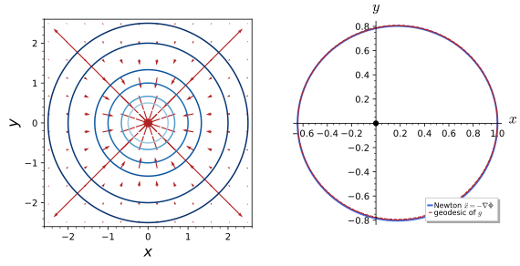
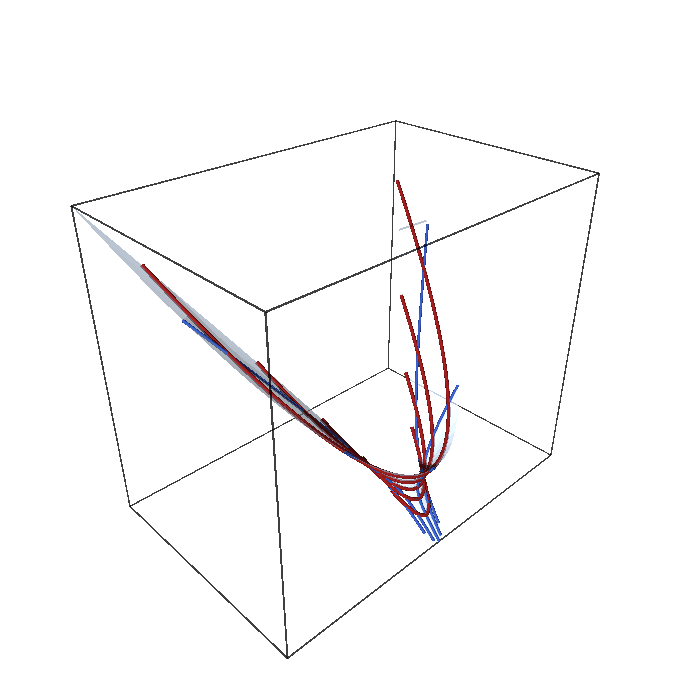
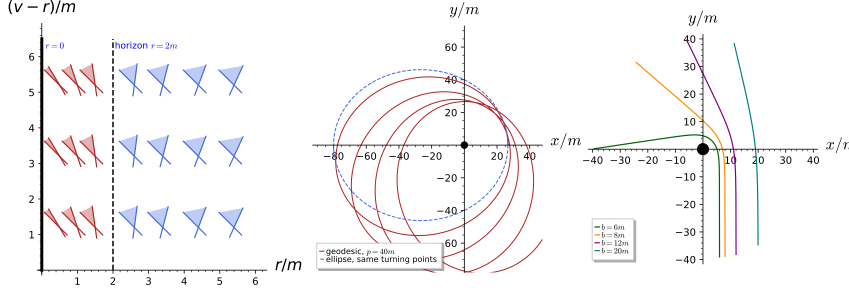
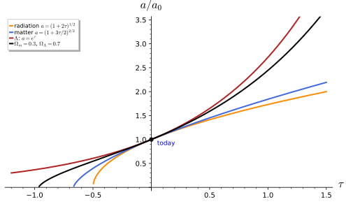

General relativity
General relativity is the theory of gravitation in which the metric of spacetime is itself the dynamical field: matter tells spacetime how to curve, through the Einstein equations, and spacetime tells matter how to move, along its geodesics. Newton’s law of gravitation is recovered for weak fields and slow motion, and the corrections to it are the classic tests of the theory: the advance of the perihelion of Mercury, the bending of light by the Sun and the gravitational redshift. This chapter has three sections. The Einstein-Hilbert action introduces spacetime and the equivalence principle, shows how the geodesic equation reproduces Newton’s law, and defines the action of the gravitational field together with the formulas needed to vary it. The Einstein equations carries out the variation, defines the stress tensor and the cosmological constant, and studies the maximally symmetric vacuum solutions, de Sitter and anti-de Sitter space. Black holes and cosmology solves the equations in the two settings where they are used most: the Schwarzschild solution outside a spherical mass, with its horizon and its orbits, and the expanding homogeneous universe of Friedmann, Lemaître, Robertson and Walker. We use the signature (+, -, -, -) of Coordinates, indices and signature throughout, in which the scalar curvature of a sphere-like (de Sitter) spacetime is negative and the action carries an overall minus sign. Minkowski spacetime, the flat spacetime of special relativity on which every spacetime is modelled locally, and the Rindler frame of uniformly accelerated observers, whose clocks behave as clocks in a gravitational field, are developed in Special relativity (Minkowski spacetime, Relativistic dynamics). Every statement is followed by three examples and three exercises with hidden solutions.
The Einstein-Hilbert action
Kaluza-Klein theory is general relativity in more than four dimensions, so its input is the action of general relativity, and Part III consists of evaluating that action on a five-dimensional metric. This section defines spacetime, states the equivalence principle, shows how the geodesic equation of Part I reproduces Newton’s law, and introduces the Einstein-Hilbert action together with the two variational formulas its variation needs. Our source is Carroll (1997), who uses the signature (-, +, +, +); we convert to our (+, -, -, -) with the rule of Coordinates, indices and signature, which flips the signs of R and of the gravitational Lagrangian but not those of \Gamma, R^\rho{}_{\sigma\mu\nu} and R_{\mu\nu}, and we note his different normalisation of the action where it matters.
Spacetime and the equivalence principle
The arena of general relativity is a manifold with a metric, exactly as in the geometry of Metrics, except that the metric is not positive definite. The sign of g(v, v) then sorts tangent vectors, and curves, into three classes with different physical meanings.
Definition 1 (Spacetime) A spacetime is a four-dimensional manifold (Definition 6 of Differential geometry) with a metric g_{\mu\nu} of Lorentzian signature (+, -, -, -) (Definition 38 of Differential geometry). Curves with g_{\mu\nu}\dot x^\mu\dot x^\nu > 0 are timelike, the possible worldlines of massive particles; those with g_{\mu\nu}\dot x^\mu\dot x^\nu = 0 are null, the worldlines of light; the remaining ones are spacelike.
Veriphy. Pending.
Lean. Pending.
Sage. Pending.
The first example is the spacetime of special relativity, flat and with the largest possible symmetry group. Every other spacetime looks like it in a small enough neighbourhood of any point, which is the content of the equivalence principle below.
Example 1 (Minkowski spacetime) \mathbb{R}^4 with \eta = \operatorname{diag}(1, -1, -1, -1) (Example 143 of Differential geometry), the spacetime of special relativity. Its Christoffel symbols vanish (Example 221 of Differential geometry), so it is flat, and its isometry group is the Poincaré group of translations and Lorentz transformations, of dimension 10 = 4 \cdot 5/2, the maximum (Definition 79 of Differential geometry).
The second example is curved and expanding. It reappears throughout the chapter: as a vacuum solution with a cosmological constant in Section 1.2 and as a cosmological model in Section 1.3.
Example 2 (De Sitter space) ds^2 = dt^2 - e^{2Ht}(dx^2 + dy^2 + dz^2) with constant H > 0 describes an exponentially expanding universe: de Sitter space in flat slicing, the Lorentzian analogue of the sphere, maximally symmetric with positive curvature, whose curvature is computed in Section 1.2.
Spacetimes need not be four-dimensional; the definition makes sense in any dimension with one time and several space directions. Higher-dimensional products are the starting point of the reductions studied in the main theme.
Example 3 (Product spacetimes) M_4 \times S^1 with ds^2 = \eta_{\mu\nu}dx^\mu dx^\nu - R^2dy^2 (Definition 48 of Differential geometry with the sign of the internal metric reversed), the spacetime of Part III, is a five-dimensional Lorentzian manifold; M_4 \times S/R with minus the invariant metric of Definition 4 of Homogeneous spaces and fibre bundles on the coset is the spacetime of Part V. Both have the signature (+, -, \dots, -).
The causal character of a vector depends only on the sign of its norm, and this sign is computed with the metric. The first exercise does this for a few vectors and a family of worldlines in Minkowski space.
Exercise 1 (Timelike, null and spacelike) Classify the vectors (1, 0, 0, 0), (1, 1, 0, 0), (1, 2, 0, 0) and (0, 0, 1, 0) of Minkowski space, and show that the worldline x^\mu(t) = (t, vt, 0, 0) is timelike exactly when |v| < 1.
With \eta = \operatorname{diag}(1, -1, -1, -1) the norms are 1, 0, -3 and -1: timelike, null, spacelike, spacelike. The tangent of the worldline is (1, v, 0, 0) with norm 1 - v^2, positive exactly when |v| < 1: a massive particle moves slower than light, and |v| = 1 is a light ray.
A metric that looks curved may be flat space in unusual coordinates; only the Riemann tensor decides. The Rindler metric of a uniformly accelerated observer is the standard example, and the exercise computes its curvature with SageManifolds.
Exercise 2 (Rindler space) Show that ds^2 = x^2dt^2 - dx^2 - dy^2 - dz^2 on x > 0 has non-zero Christoffel symbols but vanishing Riemann tensor, and find the coordinate change to Minkowski space.
The non-zero symbols are \Gamma^x_{tt} = x and \Gamma^t_{tx} = 1/x; the Riemann tensor vanishes, so the space is flat (Definition 63 of Differential geometry). Indeed T = x\sinh t, X = x\cosh t give dT^2 - dX^2 = x^2dt^2 - dx^2: the Rindler wedge X > |T| of Minkowski space, whose observers at fixed x have constant proper acceleration 1/x.
import os, sys; sys.path.insert(0, os.path.dirname(os.path.abspath(__file__))); from _curvature import *
M, X, g = chart_metric('t x:(0,+oo) y z', lambda c: [[c[1]^2, 0, 0, 0], [0, -1, 0, 0], [0, 0, -1, 0], [0, 0, 0, -1]], structure='Lorentzian', ranges='t x:(0,+oo) y z')
print("non-zero Christoffel symbols:", christoffel(g))
print("Riemann tensor vanishes:", g.riemann() == 0)
t, x = var('t x')
T, Xc = x*sinh(t), x*cosh(t)
dT = [diff(T, t), diff(T, x)]; dX = [diff(Xc, t), diff(Xc, x)]
G2 = matrix(SR, 2, 2, lambda i, j: dT[i]*dT[j] - dX[i]*dX[j]).simplify_full()
print("dT^2 - dX^2 in (t, x):", G2, "; equals diag(x^2, -1):", G2 == matrix([[x^2, 0], [0, -1]]))Output:
non-zero Christoffel symbols: {('t', 't', 'x'): 1/x, ('x', 't', 't'): x}
Riemann tensor vanishes: True
dT^2 - dX^2 in (t, x): [x^2 0]
[ 0 -1] ; equals diag(x^2, -1): TrueThe length of a timelike curve is the time shown by a clock carried along it. The third exercise computes it for a circular worldline, the relativistic version of the twin paradox.
Exercise 3 (Proper time on a circle) The proper time along a timelike curve is \tau = \int\sqrt{g_{\mu\nu}\dot x^\mu\dot x^\nu}\,dt. Compute it for x^\mu(t) = (t, R\cos\omega t, R\sin\omega t, 0), 0 \leq t \leq T, in Minkowski space, and compare with the proper time T of an observer at rest.
The tangent is (1, -R\omega\sin\omega t, R\omega\cos\omega t, 0) with norm 1 - R^2\omega^2, constant and positive for R\omega < 1; hence \tau = T\sqrt{1 - R^2\omega^2} < T. The travelling clock is younger: among timelike curves between two events the straight one, a geodesic, has the largest proper time, the Lorentzian opposite of the shortest-path property of Riemannian geodesics.
Special relativity knows nothing of gravity, and the step to general relativity is a physical principle rather than a theorem. Its content is that a gravitational field can be removed locally by free fall, so that gravity becomes a property of the metric instead of a force.
Definition 2 (Equivalence principle) The equivalence principle is the statement that in a freely falling frame the laws of physics are locally those of special relativity: gravity is not a force but the curvature of spacetime, and free particles move on geodesics (Definition 61 of Differential geometry) of g_{\mu\nu}. Mathematically it is the existence, at every point, of coordinates in which g_{\mu\nu} = \eta_{\mu\nu} and \partial_\rho g_{\mu\nu} = 0 (Riemann normal coordinates); the second derivatives, the curvature of The Riemann tensor, cannot be transformed away.
Veriphy. Pending.
Lean. Pending.
Sage. Pending.
The most familiar illustration is a freely falling laboratory. Inside it gravity disappears at a point, and only its variation across the laboratory survives.
Example 4 (The falling elevator) Inside a freely falling box no local experiment detects the gravitational field: objects released at rest stay at rest relative to the box. Only the relative acceleration of two separated objects, the geodesic deviation governed by the Riemann tensor (Definition 63 of Differential geometry), reveals gravity.
The geodesics of a metric are the candidate trajectories of free particles. Two spaces from earlier in the book illustrate this, the sphere and de Sitter space.
Example 5 (Free fall as geodesic motion) On the sphere, great circles are the geodesics (Exercise 266 of Differential geometry); in de Sitter space in flat slicing, curves of constant (x, y, z) are timelike geodesics, the comoving observers, since \Gamma^i_{tt} = 0 (Proposition 4). The equivalence principle makes such curves the trajectories of freely falling bodies.
The principle also says how matter feels gravity, by a mechanical replacement rule. This rule is used for every matter field of the book.
Example 6 (Minimal coupling) The equivalence principle fixes how matter couples to gravity: take the special-relativistic action of Actions and Euler-Lagrange equations, replace \eta_{\mu\nu} by g_{\mu\nu}, \partial_\mu by \nabla_\mu (Definition 52 of Differential geometry) and d^4x by \sqrt{-g}\,d^4x (Definition 45 of Differential geometry). For a scalar, S = \int d^4x\sqrt{-g}\,(\tfrac12g^{\mu\nu} \partial_\mu\phi\partial_\nu\phi - V), the form used throughout Parts III to V.
The equivalence principle fixes the metric and its first derivatives at a point, and the following counting argument shows that exactly the curvature is left over. It is the standard argument of Carroll (1997, sec. 2.9).
Exercise 4 (Counting the curvature) At a point p of a four-dimensional spacetime, count the Taylor coefficients of g_{\mu\nu} of order zero, one and two, and the coefficients of a coordinate change x \mapsto x' available to set them to their flat values. Show that 20 second-order coefficients survive, and compare with the number of independent components of the Riemann tensor.
g_{\mu\nu} is symmetric: 10 values at p, 10 \cdot 4 = 40 first derivatives and 10 \cdot 10 = 100 second derivatives. A change of coordinates has 16 first derivatives \partial x'/\partial x, 4 \cdot 10 = 40 second derivatives and 4 \cdot 20 = 80 third derivatives. The 16 are enough to set g_{\mu\nu}(p) = \eta_{\mu\nu} with 6 left over, the Lorentz group; the 40 set \partial g(p) = 0 exactly; of the 100 second derivatives only 80 can be removed, and 20 remain. This is the number of independent components of the Riemann tensor in four dimensions, n^2(n^2 - 1)/12 = 20 (Definition 64 of Differential geometry).
The falling elevator of the examples feels the variation of the field across it. In the Newtonian limit this variation is the second derivative of the potential, and the next exercise computes it for a point mass.
Exercise 5 (Tidal forces) Two freely falling particles at \vec x and \vec x + \vec\xi in a Newtonian potential \Phi have relative acceleration \ddot\xi^i = -(\partial_i\partial_j\Phi)\xi^j to first order in \xi. Compute the tidal matrix -\partial_i\partial_j\Phi for \Phi = -GM/r at the point (r, 0, 0), and estimate the tidal acceleration across a body of height 2\,m at 400\,km above the Earth.
The matrix is \tfrac{GM}{r^3}\operatorname{diag}(2, -1, -1): stretching along the radius and compression across it, with zero trace because \nabla^2\Phi = 0 in vacuum. In general relativity this matrix is R^i{}_{tjt}, the geodesic deviation of Example 4. Over 2\,m in low Earth orbit the stretching is about 5 \times 10^{-6}\,\mathrm{m/s^2}, imperceptible; near a stellar black hole it tears bodies apart.
x, y, z, G, M, r = var('x y z G M r'); assume(r > 0)
Phi = -G*M/sqrt(x^2 + y^2 + z^2)
T = -matrix(SR, 3, 3, lambda i, j: diff(Phi, [x, y, z][i], [x, y, z][j])).subs(x=r, y=0, z=0).simplify_full()
print("-d_i d_j Phi at (r, 0, 0) =", T)
print("equals G M / r^3 diag(2, -1, -1):", bool(T == G*M/r^3*diagonal_matrix([2, -1, -1])), "; trace (Laplacian, zero in vacuum):", T.trace())
# numbers: an astronaut of height 2 m at 400 km above the Earth
GM, R = 3.986e14, 6.371e6 + 4.0e5
print("tidal stretch over 2 m at 400 km altitude: %.2e m/s^2" % (2*GM/R^3*2))Output:
-d_i d_j Phi at (r, 0, 0) = [2*G*M/r^3 0 0]
[ 0 -G*M/r^3 0]
[ 0 0 -G*M/r^3]
equals G M / r^3 diag(2, -1, -1): True ; trace (Laplacian, zero in vacuum): 0
tidal stretch over 2 m at 400 km altitude: 5.14e-06 m/s^2Minimal coupling turns a special-relativistic action into a generally covariant one. The last exercise applies the rule to the electromagnetic field and finds that the field strength needs no Christoffel symbols at all.
Exercise 6 (Minimal coupling of the Maxwell field) Apply the rule of Example 6 to the Maxwell action -\tfrac14\int d^4x\,F_{\mu\nu}F^{\mu\nu} with F_{\mu\nu} = \partial_\mu A_\nu - \partial_\nu A_\mu. Show that \nabla_\mu A_\nu - \nabla_\nu A_\mu = \partial_\mu A_\nu - \partial_\nu A_\mu and write the resulting action.
\nabla_\mu A_\nu = \partial_\mu A_\nu - \Gamma^\rho_{\mu\nu}A_\rho (Definition 53 of Differential geometry), and the Christoffel term is symmetric in \mu\nu (Definition 54 of Differential geometry: the Levi-Civita connection is torsion free), so it cancels in the antisymmetric combination. The covariant action is S = -\tfrac14\int d^4x\sqrt{-g}\,g^{\mu\rho}g^{\nu\sigma} F_{\mu\nu}F_{\rho\sigma}: the metric enters only through the contractions and the volume element, which is where the stress tensor of Example 22 comes from.
The equivalence principle says that inertial forces are gravitational fields of a kind. The next exercise makes this concrete for a rotating frame in flat spacetime, where the Christoffel symbols turn out to be the centrifugal and Coriolis forces.
Exercise 7 (Centrifugal and Coriolis forces as Christoffel symbols) In Minkowski space with cylindrical coordinates, pass to a frame rotating with angular velocity \omega about the z-axis, \phi = \phi' + \omega t. Write the metric in (t, r, \phi', z), compute its non-zero Christoffel symbols, and show that in the non-relativistic limit d\tau \approx dt the geodesic equations become \ddot r - r\dot\phi'^2 = \omega^2r + 2\omega r\dot\phi' and r\ddot\phi' + 2\dot r\dot\phi' = -2\omega\dot r. Identify the forces. Where does g_{tt} vanish? (Blennow and Ohlsson 2022, Problem 2.115)
ds^2 = (1 - \omega^2r^2)dt^2 - 2\omega r^2\,dt\,d\phi' - dr^2 - r^2d\phi'^2 - dz^2. The non-zero symbols are \Gamma^r_{tt} = -\omega^2r, \Gamma^r_{t\phi'} = -\omega r, \Gamma^r_{\phi'\phi'} = -r, \Gamma^{\phi'}_{tr} = \omega/r and \Gamma^{\phi'}_{r\phi'} = 1/r (with their symmetric partners). The geodesic equations \ddot x^\mu = -\Gamma^\mu_{\nu\rho}\dot x^\nu\dot x^\rho with \dot t = 1 give \ddot r = \omega^2r + 2\omega r\dot\phi' + r\dot\phi'^2 and \ddot\phi' = -2(\omega + \dot\phi')\dot r/r, the stated equations; they are the free motion \ddot r = r\dot\phi^2, (r^2\dot\phi)^\cdot = 0 of the inertial frame rewritten with \dot\phi = \dot\phi' + \omega. The term \omega^2r is the centrifugal acceleration and 2\omega r\dot\phi', -2\omega\dot r/r are the components of the Coriolis acceleration -2\vec\omega\times\vec v. g_{tt} = 0 at \omega r = 1: beyond this “light cylinder” a point at rest in the rotating frame would move faster than light, and no observer can be at rest there.
Veriphy. Pending.
Lean. Pending.
Sage. Pending.
The Newtonian limit
Newton’s theory works extremely well in the solar system, so general relativity must reduce to it when fields are weak and velocities small. The following definition makes this regime precise and identifies the Newtonian potential inside the metric.
Definition 3 (Newtonian limit) The Newtonian limit of a metric is the regime of a weak static field, g_{\mu\nu} = \eta_{\mu\nu} + h_{\mu\nu} with |h| \ll 1 and \partial_th = 0, and slowly moving particles, |\dot x^i| \ll 1. In it the geodesic equation Equation 39 of Differential geometry reduces to \ddot x^i = -\Gamma^i_{tt}, and with h_{tt} = 2\Phi the Christoffel symbol is \Gamma^i_{tt} = \tfrac12 g^{ii}(-\partial_i g_{tt}) = \partial_i\Phi to first order, so \ddot x^i = -\partial_i\Phi: Newton’s law with \Phi the gravitational potential (Carroll 1997, eqs. 4.19-4.21, where h_{tt} = -2\Phi in his signature) (Proposition 1, Figure 1).
Veriphy. Pending.
Lean. Pending.
Sage. Pending.
The first example is the field of a point mass. It anticipates the exact solution of Section 1.3, whose time component it reproduces at large distance.
Example 7 (A point mass) \Phi = -GM/r gives g_{tt} = 1 - 2GM/r: the first term of the Schwarzschild metric, and the orbits of the weak-field geodesics are Kepler’s ellipses up to a slow precession of the perihelion, the first post-Newtonian correction (Figure 1).
The metric component g_{tt} also governs the rate of clocks. This gives the first effect of gravity on time, measured to high precision on the Earth and essential for satellite navigation.
Example 8 (Gravitational redshift) A clock at rest measures proper time d\tau = \sqrt{g_{tt}}\,dt = (1 + \Phi)dt: clocks deeper in the potential run slower, and light climbing out of a potential well is redshifted by \Delta\nu/\nu = -\Delta\Phi, the first confirmed consequence of the equivalence principle.
Weak-field limits also organise the extra fields of higher-dimensional theories. The scalar of the five-dimensional theory is the simplest case.
Example 9 (The Kaluza-Klein scalar as a Newtonian field) In Part III the fifth-dimension component g_{55} = \phi^2 enters the four-dimensional action as a scalar field; its weak-field limit is a Brans-Dicke-type correction to Newton’s law, which is why the radius of the fifth dimension must be stabilised.
The redshift of Example 8 was first measured in a laboratory, over the height of a building. The next example puts in the numbers of that experiment, which show how small the effect is near the Earth.
Example 10 (The Pound-Rebka experiment) Near the surface of the Earth \Phi = gz up to a constant, so light sent down a tower of height h arrives blueshifted by \Delta\nu/\nu = gh/c^2. For h = 22.5\,m, \Delta\nu/\nu = 9.81 \times 22.5/(3.00 \times 10^8)^2 = 2.45 \times 10^{-15}, the shift measured by Pound and Rebka in 1960 with the Mössbauer effect. By the equivalence principle the same shift is the Doppler shift seen in a frame accelerating upwards with g: during the travel time h/c the receiver gains the speed gh/c towards the source (Blennow and Ohlsson 2022, Problem 2.113).
Veriphy. Pending.
Lean. Pending.
Sage. Pending.
How weak is the gravitational field of familiar bodies? The dimensionless number \Phi/c^2 at the surface answers this, and the first exercise compares it for four kinds of objects.
Exercise 8 (How weak is weak) Evaluate |\Phi|/c^2 = GM/(Rc^2) at the surface of the Earth (GM = 3.99 \times 10^{14}\,\mathrm{m^3/s^2}, R = 6371\,km), the Sun (GM = 1.33 \times 10^{20}\,\mathrm{m^3/s^2}, R = 6.96 \times 10^5\,km), a white dwarf (0.6 solar masses, R = 7000\,km) and a neutron star (1.4 solar masses, R = 12\,km). Where does the Newtonian limit fail?
With c^2 = 8.99 \times 10^{16}\,\mathrm{m^2/s^2}: Earth 7 \times 10^{-10}, Sun 2.1 \times 10^{-6}, white dwarf 1.3 \times 10^{-4}, neutron star 0.17. The first three are deep in the Newtonian regime, with relativistic corrections of the order of these numbers; for a neutron star the corrections are of order one, and its structure needs the full Einstein equations.
Clocks on navigation satellites are higher in the potential and move faster than clocks on the ground, and the two effects have opposite signs. The second exercise computes both for the GPS orbit.
Exercise 9 (The GPS clocks) A clock in the weak field moving with speed v runs at d\tau = (1 + \Phi/c^2 - v^2/2c^2)\,dt to first order. Compare a GPS satellite on a circular orbit of radius 26\,561\,km with a clock on the surface of the Earth (ignore the Earth’s rotation), over one day.
The higher potential makes the satellite clock gain GM(1/R_E - 1/r)/c^2 \times 1\,\text{day} = 45.7\,\mus; its orbital speed, v^2 = GM/r, makes it lose 7.2\,\mus. The net gain of 38.5\,\mus per day would, uncorrected, shift positions by about 11\,km per day, so the satellite clocks are deliberately detuned before launch.
GM, RE, rs, c = 3.986004e14, 6.371e6, 2.6561e7, 2.99792458e8
day = 86400
grav = GM*(1/RE - 1/rs)/c^2*day*1e6
vel = -(GM/rs)/(2*c^2)*day*1e6
print("gravitational gain of the satellite clock: %.1f microseconds per day" % grav)
print("velocity loss (v^2 = GM/r): %.1f microseconds per day" % vel)
print("net: %.1f microseconds per day (light travels %.1f km in that time)" % (grav + vel, (grav + vel)*1e-6*c/1e3))Output:
gravitational gain of the satellite clock: 45.7 microseconds per day
velocity loss (v^2 = GM/r): -7.2 microseconds per day
net: 38.5 microseconds per day (light travels 11.5 km in that time)Newton’s law is not the only thing the weak-field geodesic equation knows; the time component gives the conservation of energy. The third exercise derives the Newtonian energy from the conserved quantity of a static metric.
Exercise 10 (Energy conservation in the Newtonian limit) For a static metric, E = g_{tt}\,dt/d\tau is constant along geodesics (it is the conserved quantity of the Killing vector \partial_t, Definition 77 of Differential geometry). Show that for g_{tt} = 1 + 2\Phi, g_{ij} = -(1 - 2\Phi)\delta_{ij} and a slow particle, E = 1 + \tfrac12v^2 + \Phi to first order in \Phi and v^2.
From d\tau^2 = (1 + 2\Phi)dt^2 - (1 - 2\Phi)d\vec x^2, dt/d\tau = (1 + 2\Phi - (1 - 2\Phi)v^2)^{-1/2} \approx 1 - \Phi + \tfrac12v^2. Then E = (1 + 2\Phi)(1 - \Phi + \tfrac12v^2) \approx 1 + \Phi + \tfrac12v^2: the rest energy plus the Newtonian energy per unit mass, which is therefore conserved.
The Newtonian limit has two sides: the connection of the weak-field metric reduces at first order to the gradient of the potential, and its geodesics follow Newton’s orbits. The proposition records both facts, which are shown in Figure 1.
Proposition 1 (The Newtonian limit of the Christoffel symbols) For g_{tt} = 1 + 2\Phi, g_{ij} = -(1 - 2\Phi)\delta_{ij} with \Phi = -M/r, the Levi-Civita connection has \Gamma^i_{tt} = \partial_i\Phi + O(\Phi^2) for i = x, y, z, and the geodesic of the weak-field metric with M = 10^{-3} stays within 0.05 of the Newtonian orbit over about two periods.
Veriphy. Pending.
Lean. Pending.
Sage. Computed with SageManifolds (figures/newtonian_limit.sage): the identity \Gamma^i_{tt} = \partial_i\Phi is exact to first order in \Phi, and the orbit comparison is numerical.

figures/newtonian_limit.sage.
The orbit in Figure 1 starts at (1, 0) with a speed below that of a circular orbit. This makes the starting point the aphelion of an ellipse.
Example 11 (The orbit of the figure) With M = 10^{-3} the circular speed at r = 1 is \sqrt{M/r} \approx 0.0316; the initial speed 0.028 is smaller, so the orbit is an ellipse with aphelion at x = 1. Its angular momentum 0.028 gives the semi-latus rectum p = 0. 028^2/M = 0.784, hence eccentricity e = 1 - p = 0.216, semi-major axis a = p/(1 - e^2) = 0.82 and perihelion 0.64 (Proposition 1 of Classical mechanics); along it |\Phi| \leq 1.6 \times 10^{-3}, deep in the weak-field regime of Definition 3.
The proposition keeps only the first order in \Phi. The exact symbols differ by factors of 1 \pm 2\Phi, which the next example displays.
Example 12 (The exact symbols) For the weak-field metric the exact symbols are \Gamma^i_{tt} = \partial_i\Phi/(1 - 2\Phi) and \Gamma^t_{ti} = \partial_i\Phi/(1 + 2\Phi) (Exercise 12): the corrections are of relative size \Phi \sim 10^{-3} on the orbit of the figure, and they produce the slow precession seen in the deviation of the two curves.
The geodesic equation also has spatial Christoffel symbols \Gamma^i_{jk} from g_{ij}. They multiply two powers of the velocity and so drop out for slow particles, but not for light.
Example 13 (Terms that need speed) \Gamma^x_{yy} = \partial_x\Phi/(1 - 2\Phi) enters the geodesic equation as \Gamma^x_{yy}\dot y^2, of order \Phi v^2: negligible against \Gamma^x_{tt} \sim \Phi when v \ll 1, but of the same order for light, v = 1. This is why the deflection of light is twice the Newtonian value (Exercise 13).
The weak-field metric also predicts the colour of light from the Sun. The next example evaluates the shift of a solar spectral line as seen from the Earth, where two potentials enter.
Example 14 (Spectral lines from the Sun) A line emitted at the solar surface R and received at the distance d of the Earth is shifted by \Delta\nu/\nu = \Phi(R) - \Phi(d) = -\tfrac{GM}{c^2}\bigl(\tfrac1R - \tfrac1d\bigr), to first order in \Phi. With GM/c^2 = 1.49\,km, R = 7.8 \times 10^8\,m and d = 1.5 \times 10^{11}\,m this is -1.91 \times 10^{-6} + 0.01 \times 10^{-6} = -1.90 \times 10^{-6}: a redshift, dominated by the solar potential, the potential of the Sun at the Earth correcting it by half a percent (Blennow and Ohlsson 2022, Problem 2.125).
Veriphy. Pending.
Lean. Pending.
Sage. Pending.
A circular orbit is the simplest check of the proposition. The first exercise compares its speed and period in the weak-field metric with Newton’s.
Exercise 11 (A circular orbit) Using \ddot x^i = -\partial_i\Phi with \Phi = -M/r, find the speed and period of a circular orbit of radius r, and evaluate them for M = 10^{-3}, r = 1. How many revolutions of the plotted ellipse (Example 11) fit into the time span 300 of Figure 1?
v^2/r = M/r^2 gives v = \sqrt{M/r} = 0.0316 and T = 2\pi r/v = 2\pi r^{3/2}/\sqrt M \approx 199. The plotted ellipse has aphelion 1 and semi-major axis a = 0.82; by Kepler’s third law (Proposition 1 of Classical mechanics) its period is 2\pi a^{3/2}/\sqrt M \approx 148, so the time 300 covers about two revolutions.
The exact Christoffel symbols of the weak-field metric can be found for an arbitrary potential. The second exercise does this with SageManifolds.
Exercise 12 (The exact Christoffel symbols) For g_{tt} = 1 + 2\Phi, g_{ij} = -(1 - 2\Phi)\delta_{ij} with an arbitrary static \Phi(x, y, z), compute \Gamma^i_{tt}, \Gamma^t_{ti} and \Gamma^x_{yy} exactly.
\Gamma^i_{tt} = -\tfrac12g^{ii}\partial_ig_{tt} = \partial_i\Phi/(1 - 2\Phi), \Gamma^t_{ti} = \tfrac12g^{tt}\partial_ig_{tt} = \partial_i\Phi/(1 + 2\Phi) and \Gamma^x_{yy} = -\tfrac12g^{xx}\partial_xg_{yy} = \partial_x\Phi/(1 - 2\Phi); to first order the first two are \partial_i\Phi, as in Proposition 1.
import os, sys; sys.path.insert(0, os.path.dirname(os.path.abspath(__file__))); from _curvature import *
M = Manifold(4, 'M', structure='Lorentzian'); X = M.chart('t x y z'); t, x, y, z = X[:]
Phi = function('Phi')(x, y, z)
g = M.metric('g'); g[0, 0] = 1 + 2*Phi
for i in (1, 2, 3): g[i, i] = -(1 - 2*Phi)
Gm = g.christoffel_symbols()
ok1 = all(bool((Gm[i, 0, 0].expr() - diff(Phi, c)/(1 - 2*Phi)).simplify_full() == 0) for i, c in zip((1, 2, 3), (x, y, z)))
ok2 = all(bool((Gm[0, 0, i].expr() - diff(Phi, c)/(1 + 2*Phi)).simplify_full() == 0) for i, c in zip((1, 2, 3), (x, y, z)))
print("Gamma^i_tt = d_i Phi/(1 - 2 Phi):", ok1, "; Gamma^t_ti = d_i Phi/(1 + 2 Phi):", ok2)
print("Gamma^x_yy =", Gm[1, 2, 2].expr().simplify_full(), " (multiplies v^2: negligible for slow particles)")Output:
Gamma^i_tt = d_i Phi/(1 - 2 Phi): True ; Gamma^t_ti = d_i Phi/(1 + 2 Phi): True
Gamma^x_yy = -diff(Phi(x, y, z), x)/(2*Phi(x, y, z) - 1) (multiplies v^2: negligible for slow particles)Light is never slow, so the Newtonian limit does not apply to it directly. The third exercise compares the deflection of a light ray computed in two ways.
Exercise 13 (Light in a weak field) A Newtonian particle passing a mass M at speed 1 and impact parameter b is deflected by 2GM/b. Using Example 13, explain why the deflection of light in the weak-field metric is twice this.
For the Newtonian particle the transverse acceleration is -\partial_\perp\Phi and \int\partial_\perp\Phi\,dt = 2GM/b along the straight line. For light, \dot x^2 = 1 and the spatial symbols contribute \Gamma^\perp_{xx}\dot x^2 = \partial_\perp\Phi as well, an equal amount: the time and space parts of the metric bend the ray equally, and the total deflection is 4GM/b. In terms of the metric, light feels g_{tt} and g_{ij} together, the slow particle only g_{tt}. The full Schwarzschild computation is Proposition 5.
Real signals are shifted by gravity and by motion at once. The next exercise compares the two effects for a signal from a rocket, using the book’s data, and asks which one dominates.
Exercise 14 (A signal from a rising rocket) A spaceship rising radially at v = 0.1\,km/s at an altitude of 1000\,km sends a light signal to the ground. With Sage, compute the gravitational and the Doppler shifts to lowest order, with GM_\oplus = 6.67 \times 10^{-11} \times 5.98 \times 10^{24}\,\mathrm{m^3/s^2} and R_\oplus = 6.3 \times 10^3\,km. Which effect dominates? (Blennow and Ohlsson 2022, Problem 2.126)
The light falls from R_\oplus + h to R_\oplus and is blueshifted by \tfrac{GM}{c^2}\bigl(\tfrac{1}{R_\oplus} - \tfrac{1}{R_\oplus + h}\bigr); the source recedes, which redshifts it by v/c:
G, M, c = 6.67e-11, 5.98e24, 3.0e8
R, h, v = 6.3e6, 1.0e6, 1.0e2
grav = G * M / c**2 * (1 / R - 1 / (R + h)) # nu_received/nu_emitted - 1 from the potential difference
dopp = -v / c # first-order longitudinal Doppler shift of a receding source
print("gravitational shift (Delta nu/nu): %+.3e" % grav)
print("Doppler shift (Delta nu/nu): %+.3e" % dopp)
print("total (Delta nu/nu): %+.3e" % (grav + dopp))
print("Doppler/gravitational ratio: %.0f" % abs(dopp / grav))Output:
gravitational shift (Delta nu/nu): +9.637e-11
Doppler shift (Delta nu/nu): -3.333e-07
total (Delta nu/nu): -3.332e-07
Doppler/gravitational ratio: 3459The Doppler shift is larger by a factor of about 3500: a rocket would have to rise at about 3\,cm/s for the two to cancel.
Veriphy. Pending.
Lean. Pending.
Sage. Pending.
The action
The dynamics of the metric itself comes from an action, as for every field of Actions and Euler-Lagrange equations. Coordinate invariance and the requirement of at most two derivatives leave essentially one candidate, the integral of the scalar curvature.
Definition 4 (Einstein-Hilbert action) The Einstein-Hilbert action is S_{\mathrm{EH}}[g] = -\frac{1}{2\kappa^2}\int d^4x\,\sqrt{-g}\,R, \qquad \kappa^2 = 8\pi G, \tag{1} with R the scalar curvature (Definition 70 of Differential geometry) and \sqrt{-g}\,d^4x the volume element (Definition 45 of Differential geometry); the overall sign is the one that makes the kinetic energy of the graviton positive in our signature (+, -, -, -), in which R has the opposite sign to the mostly-plus R of Carroll (1997) (Coordinates, indices and signature). It is the only action built from the metric alone with at most two derivatives, up to the addition of a constant, the cosmological term -\tfrac{1}{\kappa^2}\int\sqrt{-g}\,\Lambda, whose sign is the same in both signatures (Carroll 1997, eqs. 4.54-4.55 and 4.73). Carroll (1997) writes S = \tfrac{1}{8\pi G}S_H + S_M with S_H = \int\sqrt{-g}R [eq. 4.68] in his signature; after conversion this is a factor 2 different from Equation 1, compensated in his definition of the stress tensor.
Veriphy. Pending.
Lean. Pending.
Sage. Pending.
In two dimensions the action is special: it does not depend on the metric at all. The sphere shows this most directly.
Example 15 (The action of a sphere) For the unit sphere, R = 2 (Proposition 25 of Differential geometry) and \int\sqrt g\,d^2x = 4\pi, so \int\sqrt gR = 8\pi = 4\pi\chi: in two dimensions the Einstein-Hilbert action is the topological invariant of the Gauss-Bonnet theorem (Exercise 321 of Differential geometry) and has no equations of motion, which is why the Einstein tensor vanishes identically there (Example 301 of Differential geometry).
The same action in five dimensions is the starting point of the main theme. Its evaluation on a product metric is a long but purely geometric computation.
Example 16 (The action of Kaluza-Klein theory) Part III starts from Equation 1 in five dimensions, S = -\tfrac{1}{2\hat\kappa^2}\int d^5x\sqrt{-\hat g}\, \hat R, and shows that for a metric of the product form M_4 \times S^1 it equals the four-dimensional Einstein-Hilbert action plus Maxwell’s action Equation 2 of Gauge theories plus a scalar’s: everything in that computation is the geometry of Part I applied to a 5 \times 5 metric.
Other invariants of the curvature exist, but they bring more derivatives. They are the first corrections of an effective theory rather than part of classical general relativity.
Example 17 (Higher-derivative actions) \int\sqrt{-g}\,R^2 and \int\sqrt{-g}\,R_{\mu\nu}R^{\mu\nu} are also coordinate invariant but contain four derivatives of the metric; they are suppressed by inverse powers of a high scale in the effective theories of Definition 3 of Quantum field theory and are absent from the classical reductions of Parts III to V.
The action contains Newton’s constant, which has dimensions in natural units. The first exercise works out these dimensions and the mass scale they define.
Exercise 15 (The Planck mass) In units \hbar = c = 1, find the mass dimension of G from the requirement that Equation 1 be dimensionless, define the Planck mass M_P = G^{-1/2} and evaluate it in GeV using G = 6.71 \times 10^{-39}\,\mathrm{GeV^{-2}}. What is the dimension of G in n spacetime dimensions?
d^4x has mass dimension -4 and R, two derivatives of the dimensionless metric, has dimension 2; so 1/G must have dimension 2, [G] = -2. Then M_P = (6.71 \times 10^{-39})^{-1/2}\,\mathrm{GeV} = 1.22 \times 10^{19}\, \mathrm{GeV}, the scale at which quantum gravity becomes strong. In n dimensions d^nx\,R has dimension 2 - n, so [G_n] = 2 - n; this is why a higher-dimensional Newton constant is related to the four-dimensional one by a volume.
The second exercise, from the old version of this section, confirms that the two-dimensional action is topological. It uses the Gauss-Bonnet theorem of Ricci tensor and scalar curvature.
Exercise 16 (Two dimensions) Compute \int\sqrt g\,R for the torus of Example 267 of Differential geometry and for the sphere of radius a, and explain why the result does not depend on a.
For the sphere of radius a, R = 2/a^2 and the area is 4\pi a^2, so \int\sqrt gR = 8\pi, independent of a; for the torus the integral of the Gaussian curvature vanishes (Proposition 28 of Differential geometry), so \int\sqrt gR = 0. Both are 4\pi\chi by the Gauss-Bonnet theorem: in two dimensions the Einstein-Hilbert action is a topological invariant, with no dependence on the metric and hence no equations of motion.
On a solution of the equations with cosmological constant the integrand of the action takes a definite value. The third exercise evaluates it on de Sitter space with SageManifolds.
Exercise 17 (The action density of de Sitter space) For ds^2 = dt^2 - e^{2Ht}d\vec x^2 in four dimensions compute \sqrt{-g}, R and the Lagrangian density \sqrt{-g}\,(R + 2\Lambda) of the action of Definition 8 at \Lambda = 3H^2.
\sqrt{-g} = e^{3Ht}, R = -12H^2 (Exercise 42), so \sqrt{-g}\,(R + 2\Lambda) = -6H^2e^{3Ht}. On a vacuum solution in four dimensions R = -4\Lambda (Exercise 35), so the density is always -2\Lambda\sqrt{-g}: the on-shell action is minus twice the cosmological term, proportional to the spacetime volume.
import os, sys; sys.path.insert(0, os.path.dirname(os.path.abspath(__file__))); from _curvature import *
H = var('H'); assume(H > 0)
M, X, g = chart_metric('t x y z', lambda c: [[1, 0, 0, 0], [0, -exp(2*H*c[0]), 0, 0], [0, 0, -exp(2*H*c[0]), 0], [0, 0, 0, -exp(2*H*c[0])]], structure='Lorentzian')
t = X[0]
sqrtg = sqrt(-g.determinant().expr()).simplify_full()
R = g.ricci_scalar().expr().simplify_full()
dens = (sqrtg*(R + 2*3*H^2)).simplify_full()
print("sqrt(-g) =", sqrtg, "; R =", R, "; sqrt(-g)(R + 2 Lambda) =", dens, "; equals -6 H^2 e^{3Ht}:", bool(dens == -6*H^2*exp(3*H*t)))Output:
sqrt(-g) = e^(3*H*t) ; R = -12*H^2 ; sqrt(-g)(R + 2 Lambda) = -6*H^2*e^(3*H*t) ; equals -6 H^2 e^{3Ht}: TrueTo derive equations of motion from Equation 1 we must vary the metric, and both the volume element and the curvature respond. The next definition fixes what a variation is and records the two identities that compute the response.
Definition 5 (Variation of the metric) A variation of the metric is a one-parameter family g_{\mu\nu} + \epsilon\,\delta g_{\mu\nu}, equivalently g^{\mu\nu} + \epsilon\,\delta g^{\mu\nu} with \delta g^{\mu\nu} = -g^{\mu\rho}g^{\nu\sigma}\delta g_{\rho\sigma} (because \delta(g^{\mu\nu}g_{\nu\rho}) = 0). Two identities govern how the action responds: for the determinant, \delta\sqrt{-g} = -\tfrac12\sqrt{-g}\,g_{\mu\nu}\,\delta g^{\mu\nu} \tag{2} from \delta\det M = \det M\operatorname{tr}(M^{-1}\delta M) , Exercise 19, and for the curvature the Palatini identity \delta R^\rho{}_{\sigma\mu\nu} = \nabla_\mu(\delta\Gamma^\rho_{\nu\sigma}) - \nabla_\nu(\delta\Gamma^\rho_{\mu\sigma}), \qquad \delta R_{\mu\nu} = \nabla_\rho(\delta\Gamma^\rho_{\nu\mu}) - \nabla_\nu(\delta\Gamma^\rho_{\rho\mu}), \tag{3} which holds because \delta\Gamma, the difference of two connections, is a tensor , Exercise 20.
Veriphy. Pending.
Lean. Pending.
Sage. Pending.
For a diagonal metric the determinant identity can be checked by hand. The example does this; the general case is the subject of Exercise 19.
Example 18 (A diagonal metric) For g = \operatorname{diag}(g_0, g_1, g_2, g_3), \sqrt{-g} = \sqrt{-g_0g_1g_2g_3} and varying g^{\mu\mu} \to g^{\mu\mu} + \epsilon d_\mu gives \tfrac{d}{d\epsilon}\sqrt{-g} = -\tfrac12\sqrt{-g}\sum_\mu g_\mu d_\mu, which is Equation 2; the same holds for a non-diagonal metric (Exercise 19).
A variation proportional to the metric itself is a change of scale. It shows how the dimension of spacetime enters the variation of the volume.
Example 19 (A conformal rescaling) \delta g_{\mu\nu} = 2\sigma g_{\mu\nu} gives \delta g^{\mu\nu} = -2\sigma g^{\mu\nu} and \delta\sqrt{-g} = 4\sigma\sqrt{-g} in four dimensions: the volume element scales with the fourth power of the length scale, as it must. In n dimensions the factor is n\sigma, which is how the dimension enters the reductions of Part III.
The variation of the Ricci tensor enters the action contracted with the inverse metric. The contraction turns it into a total derivative, which is the key step of the derivation of the Einstein equations.
Example 20 (The curvature variation is a divergence) Contracting Equation 3 with g^{\mu\nu}, which commutes with \nabla by Equation 33 of Differential geometry, gives g^{\mu\nu}\delta R_{\mu\nu} = \nabla_\sigma V^\sigma with V^\sigma = g^{\mu\nu}\delta\Gamma^\sigma_{\nu\mu} - g^{\mu\sigma}\delta\Gamma^\rho_{\rho\mu}, and \int\sqrt{-g}\,\nabla_\sigma V^\sigma = \int\partial_\sigma(\sqrt{-g}V^\sigma) vanishes for variations that vanish at infinity (Carroll 1997, eq. 4.61): this term contributes nothing to the equations of motion, which is what makes them second order.
The inverse metric varies with a minus sign and two metric factors. The first exercise checks this rule on a general symmetric matrix.
Exercise 18 (Varying the inverse) Show that \delta g^{\mu\nu} = -g^{\mu\rho}g^{\nu\sigma}\delta g_{\rho\sigma} by differentiating (g + \epsilon\,\delta g)^{-1} at \epsilon = 0, and check it for a general symmetric 3 \times 3 matrix.
Differentiating (g + \epsilon\,\delta g)(g + \epsilon\,\delta g)^{-1} = 1 gives \delta g\,g^{-1} + g\,\delta(g^{-1}) = 0, so \delta(g^{-1}) = -g^{-1}\,\delta g\,g^{-1}, which in components is the stated formula. In Sage, with all six entries of g and of \delta g symbolic:
eps = var('eps')
a = matrix(SR, 3, 3, lambda i, j: var('g%d%d' % (min(i, j), max(i, j))))
d = matrix(SR, 3, 3, lambda i, j: var('d%d%d' % (min(i, j), max(i, j))))
lhs = diff((a + eps*d).inverse(), eps).subs(eps=0)
rhs = -a.inverse()*d*a.inverse()
print("d/d eps (g + eps dg)^{-1} at eps = 0 equals -g^{-1} dg g^{-1}:", (lhs - rhs).simplify_full() == 0)Output:
d/d eps (g + eps dg)^{-1} at eps = 0 equals -g^{-1} dg g^{-1}: TrueThe determinant identity is the second piece of the variation. The second exercise, kept from the old version of the section, checks it first on a diagonal metric and then in general.
Exercise 19 (The variation of the determinant) Verify Equation 2 on a diagonal metric by differentiating \sqrt{-\det g} with respect to a variation of the inverse metric, then on a general symmetric 2 \times 2 metric.
For g = \operatorname{diag}(g_0, g_1, g_2, g_3), g^{\mu\mu} = 1/g_\mu; varying g^{\mu\mu} \to g^{\mu\mu} + \epsilon d_\mu changes g_\mu to 1/(1/g_\mu + \epsilon d_\mu), and differentiating at \epsilon = 0 gives -\tfrac12\sqrt{-g}\sum_\mu g_\mu d_\mu. For a general metric, g_{\mu\nu}\delta g^{\mu\nu} = \operatorname{tr}(g\,\delta g^{-1}). In Sage:
eps = var("eps")
gd = list(var("g0 g1 g2 g3")); d = list(var("d0 d1 d2 d3"))
assume(g0 > 0); assume(g1 < 0); assume(g2 < 0); assume(g3 < 0) # signature (+, -, -, -)
ginv = diagonal_matrix(SR, [1/gi + eps*di for gi, di in zip(gd, d)])
gvar = ginv.inverse()
sqrtg = sqrt(-gvar.det())
lhs = diff(sqrtg, eps).subs(eps=0).simplify_full()
rhs = (-1/2 * sqrt(-prod(gd)) * sum(gi*di for gi, di in zip(gd, d))).simplify_full()
print("d/d eps sqrt(-g) at eps = 0:", lhs)
print("[PASS] delta sqrt(-g) = -(1/2) sqrt(-g) g_{mu nu} delta g^{mu nu} for a diagonal metric:", bool((lhs - rhs).simplify_full() == 0))
# general 2x2 symmetric metric, to show the formula does not rely on diagonality
a, b, c = var("a b c"); da, db, dc = var("da db dc")
G = matrix(SR, [[a, b], [b, c]]); dGinv = matrix(SR, [[da, db], [db, dc]])
Ginv_var = G.inverse() + eps*dGinv
G_var = Ginv_var.inverse()
lhs2 = diff(sqrt(-G_var.det()), eps).subs(eps=0)
rhs2 = -1/2 * sqrt(-G.det()) * (G * dGinv).trace() # g_{mu nu} delta g^{mu nu} = tr(g dg^{-1})
print("[PASS] the same identity for a general symmetric 2x2 metric:", bool((lhs2 - rhs2).simplify_full() == 0))Output:
d/d eps sqrt(-g) at eps = 0: 1/2*(d3*g0*g1*g2*g3^2 + (d2*g0*g1*g2^2 + (d0*g0^2*g1 + d1*g0*g1^2)*g2)*g3)/sqrt(-g0*g1*g2*g3)
[PASS] delta sqrt(-g) = -(1/2) sqrt(-g) g_{mu nu} delta g^{mu nu} for a diagonal metric: True
[PASS] the same identity for a general symmetric 2x2 metric: TrueThe Palatini identity rests on the fact that the difference of two connections is a tensor. The third exercise proves this and derives the identity.
Exercise 20 (The variation of the connection is a tensor) Show that \delta\Gamma^\rho_{\mu\nu} transforms as a tensor although \Gamma^\rho_{\mu\nu} does not, and derive the first formula of Equation 3.
Under a coordinate change the Christoffel symbols Equation 34 of Differential geometry transform with an inhomogeneous term \tfrac{\partial x^\rho}{\partial x'^\lambda}\tfrac{\partial^2x'^\lambda}{\partial x^\mu\partial x^\nu} that does not depend on the metric; the difference of the symbols of g + \epsilon\delta g and of g has this term cancel, so \delta\Gamma is a tensor. Varying Equation 42 of Differential geometry, \delta R^\rho{}_{\sigma\mu\nu} = \partial_\mu\delta\Gamma^\rho_{\nu\sigma} - \partial_\nu\delta\Gamma^\rho_{\mu\sigma} + \delta\Gamma^\rho_{\mu\lambda}\Gamma^\lambda_{\nu\sigma} + \Gamma^\rho_{\mu\lambda} \delta\Gamma^\lambda_{\nu\sigma} - (\mu \leftrightarrow \nu); writing out \nabla_\mu(\delta\Gamma^\rho_{\nu\sigma}) - \nabla_\nu(\delta\Gamma^\rho_{\mu\sigma}) with the covariant derivative of a (1, 2) tensor (Definition 53 of Differential geometry) reproduces exactly these terms, the \Gamma\delta\Gamma terms with the lower index \lambda cancelling by the symmetry of \Gamma^\lambda_{\mu\nu}.
The Einstein equations
Varying the Einstein-Hilbert action with the two identities of Section 1.1 gives the Einstein tensor, and adding matter gives the Einstein equations. This section carries the variation out in full, defines the stress tensor and the cosmological constant, and checks the equations on two explicit metrics: the sphere, where the Einstein tensor vanishes identically, and de Sitter space, the simplest curved solution, computed in full in three dimensions and, in an exercise, in four. Both return in Part VI, where internal spheres and de Sitter or anti-de Sitter spacetimes are the vacua of supergravity compactifications.
The variation of the action
Matter enters the Einstein equations through a single symmetric tensor. It is defined as the response of the matter action to a change of the metric, which makes it automatically covariant.
Definition 6 (Stress tensor) The stress tensor (energy-momentum tensor) of matter with action S_M[g, \text{fields}] is T_{\mu\nu} = \frac{2}{\sqrt{-g}}\frac{\delta S_M}{\delta g^{\mu\nu}}, \tag{4} a symmetric tensor field conserved on the matter equations of motion, \nabla^\mu T_{\mu\nu} = 0; on flat space it agrees with the Noether current of translations (Proposition 6 of Classical field theory) up to terms that do not change the conserved charges (Carroll 1997, eq. 4.70, with his normalisation and the opposite overall sign, which comes with his signature). The sign is fixed by requiring T_{tt} \geq 0 for a scalar field (Example 21).
Veriphy. Pending.
Lean. Pending.
Sage. Pending.
The scalar field is the simplest matter, and its stress tensor shows the general pattern. The time component is the familiar energy density.
Example 21 (A scalar field) For S_M = \int\sqrt{-g}\,(\tfrac12g^{\mu\nu}\partial_\mu\phi\partial_\nu\phi - V), Equation 2 gives T_{\mu\nu} = \partial_\mu\phi\partial_\nu\phi - g_{\mu\nu}(\tfrac12(\partial\phi)^2 - V), whose tt component is the energy density \tfrac12\dot\phi^2 + \tfrac12(\nabla\phi)^2 + V (Exercise 22).
The electromagnetic field is the classic example of a traceless stress tensor. Its energy density and its momentum density, the Poynting vector, follow from the same formula (Exercise 23).
Example 22 (The electromagnetic field) For the Maxwell action Equation 2 of Gauge theories, T_{\mu\nu} = F_{\mu\rho}F^\rho{}_\nu + \tfrac14g_{\mu\nu}F_{\rho\sigma}F^{\rho\sigma}, traceless in four dimensions, with T_{tt} = \tfrac12(\vec E^2 + \vec B^2): the energy density of the field.
On large scales matter is described by a density and a pressure rather than by individual fields. The perfect fluid packages them into a tensor and is the source used in cosmology.
Example 23 (A perfect fluid) T_{\mu\nu} = (\rho + p)u_\mu u_\nu - pg_{\mu\nu} with four-velocity u^\mu (u_\mu u^\mu = 1), density \rho and pressure p is the stress tensor of cosmology; static dust has p = 0 and T_{tt} = \rho, the source of the Newtonian limit (Exercise 26).
The trace of the stress tensor appears in the trace-reversed Einstein equations. The first exercise computes it for the perfect fluid and its standard special cases.
Exercise 21 (The trace of a perfect fluid) Compute T = g^{\mu\nu}T_{\mu\nu} for the perfect fluid of Example 23. For which equation of state p = w\rho does it vanish, and which of the examples of this section has that equation of state?
T = (\rho + p)u_\mu u^\mu - 4p = \rho - 3p. It vanishes for w = \tfrac13, radiation, consistent with the traceless Maxwell tensor of Example 22: a gas of photons is a perfect fluid with p = \rho/3. Dust has T = \rho and a cosmological constant (w = -1) has T = 4\rho.
The second exercise, from the old version of this section, derives the scalar stress tensor from Equation 4 and compares it with the Noether tensor of flat space. The two agree, which justifies calling Equation 4 the energy-momentum tensor.
Exercise 22 (The stress tensor of a scalar) Derive T_{\mu\nu} for S_M = \int\sqrt{-g}\,(\tfrac12g^{\mu\nu}\partial_\mu\phi\partial_\nu\phi - V) from Equation 4 and compare with the Noether tensor of Proposition 6 of Classical field theory on flat space.
\delta S_M = \int\sqrt{-g}\,[\tfrac12\partial_\mu\phi\partial_\nu\phi\,\delta g^{\mu\nu}] + \int\delta\sqrt{-g}\,\mathcal{L} with \delta\sqrt{-g} = -\tfrac12\sqrt{-g}g_{\mu\nu}\delta g^{\mu\nu}, so T_{\mu\nu} = \tfrac{2}{\sqrt{-g}}\tfrac{\delta S_M} {\delta g^{\mu\nu}} = \partial_\mu\phi\partial_\nu\phi - g_{\mu\nu}\mathcal{L}. On flat space with V = \tfrac12m^2\phi^2 this is exactly T^{\mu\nu} = \partial^\mu\phi\partial^\nu\phi - \eta^{\mu\nu}\mathcal{L} of Proposition 6 of Classical field theory.
Veriphy. Pending.
Lean. The divergence of the flat-space tensor is the Lean-verified statement of Proposition 6 of Classical field theory (see its Verification box).
Sage. Pending.
The Maxwell stress tensor can be checked component by component. The third exercise does this in Sage for an arbitrary electric and magnetic field.
Exercise 23 (The Maxwell stress tensor in components) On flat space put F_{0i} = E_i and F_{ij} = -\epsilon_{ijk}B_k. Show that F_{\mu\nu}F^{\mu\nu} = 2(\vec B^2 - \vec E^2) and that the tensor of Example 22 has T_{00} = \tfrac12(\vec E^2 + \vec B^2), T^{0i} = (\vec E \times \vec B)_i and zero trace.
F_{\mu\nu}F^{\mu\nu} = 2F_{0i}F^{0i} + F_{ij}F^{ij} = -2\vec E^2 + 2\vec B^2 since raising one time and one space index gives a minus sign. Then T_{00} = F_{0i}F^i{}_0 + \tfrac14F^2 = \vec E^2 + \tfrac12(\vec B^2 - \vec E^2), the energy density; the mixed components give the Poynting vector, and the trace F_{\mu\rho}F^{\rho\mu} + F^2 = -F^2 + F^2 = 0.
E = vector(var('E1 E2 E3')); B = vector(var('B1 B2 B3'))
eta = diagonal_matrix([1, -1, -1, -1])
F = matrix(SR, 4, 4)
for i in range(3):
F[0, i+1] = E[i]; F[i+1, 0] = -E[i]
def levi(i, j, k): return (i - j)*(j - k)*(k - i)/2 # epsilon_{ijk} for indices 0, 1, 2
for i in range(3):
for j in range(3):
F[i+1, j+1] = -sum(levi(i, j, k)*B[k] for k in range(3))
Fup = eta*F*eta # F^{mu nu}
F2 = sum(F[m, n]*Fup[m, n] for m in range(4) for n in range(4))
T = matrix(SR, 4, 4, lambda m, n: sum(F[m, r]*(eta*F)[r, n] for r in range(4)) + eta[m, n]*F2/4)
print("F_{mu nu} F^{mu nu} = 2(B^2 - E^2):", bool(F2.expand() == (2*(B*B - E*E)).expand()))
print("T_00 = (E^2 + B^2)/2:", bool(T[0, 0].expand() == ((E*E + B*B)/2).expand()))
print("T^{0i} = -T_{0i} = (E x B)_i, the Poynting vector:", all(bool(-T[0, i+1].expand() == E.cross_product(B)[i].expand()) for i in range(3)))
print("trace eta^{mu nu} T_{mu nu} = 0:", bool(sum(eta[m, m]*T[m, m] for m in range(4)).expand() == 0))Output:
F_{mu nu} F^{mu nu} = 2(B^2 - E^2): True
T_00 = (E^2 + B^2)/2: True
T^{0i} = -T_{0i} = (E x B)_i, the Poynting vector: True
trace eta^{mu nu} T_{mu nu} = 0: TrueConservation of the stress tensor is the relativistic form of the equations of fluid dynamics. The next exercise recovers the Newtonian continuity and Euler equations from it, gravity included.
Exercise 24 (The Euler equations from \nabla_\mu T^{\mu\nu} = 0) For the perfect fluid T^{\mu\nu} = (\rho + p)u^\mu u^\nu - pg^{\mu\nu} in the weak-field metric of Definition 3, with u^\mu \approx (1, \vec v), |\vec v| \ll 1 and p \ll \rho, show that the \nu = t component of \nabla_\mu T^{\mu\nu} = 0 is the continuity equation \partial_t\rho + \nabla\cdot(\rho\vec v) = 0 and the spatial components are the Euler equation \rho(\partial_t + \vec v\cdot\nabla)\vec v = -\nabla p - \rho\nabla\Phi (Plebański and Krasiński 2024, sec. 12.19, Exercises 1-2).
\nabla_\mu T^{\mu\nu} = \partial_\mu T^{\mu\nu} + \Gamma^\mu_{\mu\lambda}T^{\lambda\nu} + \Gamma^\nu_{\mu\lambda}T^{\mu\lambda}. To lowest order T^{tt} = \rho, T^{ti} = \rho v^i, T^{ij} = \rho v^iv^j + p\delta^{ij} (since g^{ij} \approx -\delta^{ij}), and the only Christoffel symbol multiplying the large component T^{tt} is \Gamma^i_{tt} = \partial_i\Phi (Proposition 1); the others are of order \Phi and multiply small terms. For \nu = t: \partial_t\rho + \partial_i(\rho v^i) = 0. For \nu = i: \partial_t(\rho v^i) + \partial_j(\rho v^iv^j) + \partial_ip + \rho\partial_i\Phi = 0; subtracting v^i times the continuity equation leaves \rho(\partial_tv^i + v^j\partial_jv^i) = -\partial_ip - \rho\partial_i\Phi. For dust, p = 0, this is the geodesic equation of Exercise 30 in Newtonian form.
Veriphy. Pending.
Lean. Pending.
Sage. Pending.
With the stress tensor in hand the field equations can be stated. They equate the Einstein tensor of Definition 72 of Differential geometry, built from the curvature, to the stress tensor of the matter.
Definition 7 (Einstein equations) The Einstein equations are the equations of motion of S_{\mathrm{EH}} + S_M under variations of the metric, G_{\mu\nu} = \kappa^2T_{\mu\nu}, \qquad G_{\mu\nu} = R_{\mu\nu} - \tfrac12R\,g_{\mu\nu}, \tag{5} with G_{\mu\nu} the Einstein tensor of Definition 72 of Differential geometry and \kappa^2 = 8\pi G fixed by the Newtonian limit (Proposition 2). Their trace, -R = \kappa^2T in four dimensions, gives the trace-reversed form R_{\mu\nu} = \kappa^2(T_{\mu\nu} - \tfrac12Tg_{\mu\nu}).
Veriphy. Pending.
Lean. Pending.
Sage. Pending.
The first check of the equations is that they contain Newton’s law of gravitation. This also fixes the constant \kappa.
Example 24 (The Newtonian limit of the equations) For static dust with T_{tt} = \rho, T = \rho, the trace-reversed equation gives R_{tt} = \tfrac12\kappa^2\rho; with R_{tt} = \nabla^2\Phi in the weak-field metric this is Poisson’s equation \nabla^2\Phi = 4\pi G\rho exactly when \kappa^2 = 8\pi G (Carroll 1997, eqs. 4.46-4.52) (Exercise 26).
In two dimensions the Einstein tensor vanishes for every metric. The equations then say nothing at all, in line with the topological action.
Example 25 (Two dimensions) In two dimensions G_{ij} \equiv 0 for every metric (Example 301 of Differential geometry, Proposition 3): the Einstein equations are empty, consistent with the action being topological (Exercise 16), and two-dimensional gravity needs a different action.
In five dimensions the equations contain more than gravity. This observation, that one geometric equation contains several four-dimensional field equations, is what starts the main theme.
Example 26 (The Kaluza-Klein equations) The five-dimensional vacuum Einstein equations \hat G_{MN} = 0 on M_4 \times S^1 split, in Part III, into the four-dimensional Einstein equations sourced by the Maxwell stress tensor of Example 22 and a scalar, Maxwell’s equations, and the equation of the scalar: gravity in five dimensions is gravity plus electromagnetism in four.
In vacuum the linearised equations of the weak-field exercise become a wave equation, and its solutions are gravitational waves. The next example counts their physical components, which shows that a gravitational wave, like light, has two polarisations.
Example 27 (Two polarisations) Write g_{\mu\nu} = \eta_{\mu\nu} + h_{\mu\nu} with |h_{\mu\nu}| \ll 1. Of the ten components of h_{\mu\nu}, a coordinate change x^\mu \to x^\mu + \chi^\mu removes four, and in vacuum the residual freedom of the Lorenz gauge removes four more. In the transverse traceless gauge h_{0\mu} = 0, \eta^{\mu\nu}h_{\mu\nu} = 0, \partial_jh_{ij} = 0, a wave travelling along z has only h_{xx} = -h_{yy} = h_+, \qquad h_{xy} = h_{yx} = h_\times , two independent components, the plus and cross polarisations, rotated into each other by 45° rotations about z (Blennow and Ohlsson 2022, Problem 2.133).
Veriphy. Pending.
Lean. Pending.
Sage. Pending.
The polarisations act on matter by changing proper distances. The second example computes the change for two free particles on the x-axis, the effect that interferometric detectors measure.
Example 28 (A wave stretches a ruler) Let h_+ = h_0\sin(2\pi f(t - z)), h_\times = 0, and let two free particles sit at x = 0 and x = L on the x-axis. In the transverse traceless gauge free particles initially at rest keep their coordinates, and the proper distance between them at time t is d = \int_0^L\sqrt{-g_{xx}}\,dx = \sqrt{1 - h_+}\,L \approx \Bigl(1 - \tfrac12h_0\sin(2\pi ft)\Bigr)L , oscillating with relative amplitude h_0/2, while distances along y oscillate in antiphase. For h_0 = 10^{-21} and L = 4\,km the change is 2 \times 10^{-18}\,m, a thousandth of a proton radius (Blennow and Ohlsson 2022, Problem 2.133).
Veriphy. Pending.
Lean. Pending.
Sage. Pending.
The trace-reversed form is often the more convenient one, especially in vacuum. The first exercise derives it in any dimension.
Exercise 25 (The trace-reversed equations) Show that in n \geq 3 dimensions G_{\mu\nu} = \kappa^2T_{\mu\nu} is equivalent to R_{\mu\nu} = \kappa^2\bigl(T_{\mu\nu} - \tfrac{1}{n - 2}T\,g_{\mu\nu}\bigr), and deduce that the vacuum equations are R_{\mu\nu} = 0.
The trace of R_{\mu\nu} - \tfrac12Rg_{\mu\nu} = \kappa^2T_{\mu\nu} is R(1 - n/2) = \kappa^2T, so R = -2\kappa^2T/(n - 2). Substituting, R_{\mu\nu} = \kappa^2T_{\mu\nu} + \tfrac12Rg_{\mu\nu} = \kappa^2(T_{\mu\nu} - Tg_{\mu\nu}/(n - 2)); the steps reverse. For T_{\mu\nu} = 0 this is R_{\mu\nu} = 0, Ricci flatness. For n = 2 the trace equation reads 0 = \kappa^2T and the argument fails, as it must (Example 25).
The second exercise, from the old version of this section, fixes \kappa by the Newtonian limit. It uses the trace-reversed equation with a dust source.
Exercise 26 (Fixing \kappa) Using g_{tt} = 1 + 2\Phi, R_{tt} \approx \tfrac12\nabla^2h_{tt} and the trace-reversed Einstein equation with T_{tt} = \rho, show that Poisson’s equation \nabla^2\Phi = 4\pi G\rho requires \kappa^2 = 8\pi G.
For static dust, T = g^{tt}T_{tt} = \rho and T_{tt} - \tfrac12Tg_{tt} \approx \tfrac12\rho, so R_{tt} = \tfrac12\kappa^2\rho. With h_{tt} = 2\Phi, R_{tt} \approx \partial_i\Gamma^i_{tt} = \tfrac12\nabla^2h_{tt} = \nabla^2\Phi, hence \nabla^2\Phi = \tfrac12\kappa^2\rho, and comparison with Poisson’s equation gives \kappa^2 = 8\pi G (Carroll 1997, eqs. 4.46-4.52, in his signature).
The approximation R_{tt} \approx \nabla^2\Phi used above deserves a direct test. The third exercise computes the Einstein tensor of the weak-field metric to first order.
Exercise 27 (The weak-field Einstein tensor) For g_{tt} = 1 + 2\Phi, g_{ij} = -(1 - 2\Phi)\delta_{ij} with static \Phi, compute R_{tt} and G_{tt} to first order in \Phi, and show that G_{tt} = \kappa^2\rho is Poisson’s equation.
To first order R_{tt} = \nabla^2\Phi and G_{tt} = 2\nabla^2\Phi (the spatial part of the metric contributes to G_{tt} through R). With T_{tt} = \rho, 2\nabla^2\Phi = \kappa^2\rho = 8\pi G\rho, which is Poisson’s equation \nabla^2\Phi = 4\pi G\rho, in agreement with Exercise 26.
import os, sys; sys.path.insert(0, os.path.dirname(os.path.abspath(__file__))); from _curvature import *
M = Manifold(4, 'M', structure='Lorentzian'); X = M.chart('t x y z'); t, x, y, z = X[:]
eps = var('eps'); Phi = function('Phi')(x, y, z)
g = M.metric('g'); g[0, 0] = 1 + 2*eps*Phi
for i in (1, 2, 3): g[i, i] = -(1 - 2*eps*Phi)
Ric = g.ricci(); Rs = g.ricci_scalar()
Gtt = (Ric[0, 0] - Rs/2*g[0, 0]).expr()
lap = sum(diff(Phi, c, 2) for c in (x, y, z))
lin = lambda e: (diff(e, eps).subs(eps=0)).simplify_full()
print("first order of G_tt equals 2 Laplacian(Phi):", bool((lin(Gtt) - 2*lap).simplify_full() == 0))
print("first order of R_tt equals Laplacian(Phi):", bool((lin(Ric[0, 0].expr()) - lap).simplify_full() == 0))Output:
first order of G_tt equals 2 Laplacian(Phi): True
first order of R_tt equals Laplacian(Phi): TrueThe linearised theory has a gauge symmetry inherited from coordinate changes. The next exercise derives it and the wave equation that it leads to, which underlies the two examples on gravitational waves.
Exercise 28 (Linearised gauge symmetry) For g_{\mu\nu} = \eta_{\mu\nu} + h_{\mu\nu}, (a) show that to first order R_{\mu\nu} = \tfrac12(\partial_\rho\partial_\mu h^\rho{}_\nu + \partial_\rho\partial_\nu h^\rho{}_\mu - \Box h_{\mu\nu} - \partial_\mu\partial_\nu h), indices raised with \eta; (b) show that x^\mu \to x^\mu + \chi^\mu with small \chi changes h_{\mu\nu} to h_{\mu\nu} - \partial_\mu\chi_\nu - \partial_\nu\chi_\mu and leaves R_{\mu\nu} unchanged; (c) show that in the Lorenz gauge \partial^\mu\bar h_{\mu\nu} = 0, \bar h_{\mu\nu} = h_{\mu\nu} - \tfrac12\eta_{\mu\nu}h, the vacuum equations are \Box\bar h_{\mu\nu} = 0 (Blennow and Ohlsson 2022, Problem 2.112).
- To first order \Gamma^\rho_{\nu\sigma} = \tfrac12(\partial_\nu h^\rho{}_\sigma + \partial_\sigma h^\rho{}_\nu - \partial^\rho h_{\nu\sigma}) and the \Gamma\Gamma terms of Equation 2 of Prerequisites and conventions are of second order, so R_{\sigma\nu} = \partial_\rho\Gamma^\rho_{\nu\sigma} - \partial_\nu\Gamma^\rho_{\rho\sigma} with \Gamma^\rho_{\rho\sigma} = \tfrac12\partial_\sigma h gives the formula. (b) The metric transforms as a tensor; to first order g'_{\mu\nu}(x) = g_{\mu\nu}(x) - \partial_\mu\chi_\nu - \partial_\nu\chi_\mu. Substituting h \to h - 2\partial\cdot\chi in (a), the terms \partial_\rho\partial_\mu\partial^\rho\chi_\nu cancel against those of \Box, and the remaining \partial_\mu\partial_\nu\partial\cdot\chi cancel between the first, second and fourth terms. (c) The gauge condition reads \partial_\rho h^\rho{}_\nu = \tfrac12\partial_\nu h, so the first two terms of (a) give \partial_\mu\partial_\nu h, which cancels the last: R_{\mu\nu} = -\tfrac12\Box h_{\mu\nu}. In vacuum R_{\mu\nu} = 0, so \Box h_{\mu\nu} = 0, and taking the trace \Box h = 0 and \Box\bar h_{\mu\nu} = 0. The gauge condition can always be reached by a \chi with \Box\chi_\nu = \partial^\mu\bar h_{\mu\nu}.
Veriphy. Pending.
Lean. Pending.
Sage. Pending.
The Einstein equations were stated as a definition; the next proposition shows that they are the equations of motion of the action. The computation combines the two identities of Definition 5 and drops a total derivative.
Proposition 2 (The Einstein equations from the action) Combining Equation 2, Equation 3 and the vanishing of the divergence term (Example 20), \delta S_{\mathrm{EH}} = -\frac{1}{2\kappa^2}\int d^4x\,\sqrt{-g}\left(R_{\mu\nu} - \tfrac12R\,g_{\mu\nu}\right)\delta g^{\mu\nu}, \tag{6} and stationarity of S_{\mathrm{EH}} + S_M gives Equation 5 with the stress tensor Equation 4. The derivation follows Carroll (1997, eqs. 4.56-4.67); the determinant identity is derived in Exercise 19, and the consistency \nabla^\mu G_{\mu\nu} = 0 = \nabla^\mu T_{\mu\nu} follows from the contracted Bianchi identity of Definition 72 of Differential geometry.
Veriphy. Pending.
Lean. Pending; the derivation is argued in the text (level text).
Sage. The determinant identity is checked symbolically in the solution of Exercise 19.
The cosmological term varies only through the volume element. Its contribution is the first example of the proposition at work.
Example 29 (Varying the cosmological term) With Equation 2, \delta\int\sqrt{-g}\,2\Lambda = -\int\sqrt{-g}\,\Lambda g_{\mu\nu}\delta g^{\mu\nu}, so the action -\tfrac{1}{2\kappa^2}\int\sqrt{-g}\,(R + 2\Lambda) varies into -\tfrac{1}{2\kappa^2}\int\sqrt{-g}\,(G_{\mu\nu} - \Lambda g_{\mu\nu}) \delta g^{\mu\nu}: the left-hand side of Definition 8.
The equations are consistent only if matter is conserved, because the Einstein tensor is divergence free. For the scalar field the conservation is a consequence of its own equation of motion.
Example 30 (Conservation from the field equation) For the scalar of Example 21, \nabla^\mu T_{\mu\nu} = (\Box\phi + V'(\phi))\,\partial_\nu\phi with \Box = \nabla^\mu\nabla_\mu: it vanishes when \phi obeys its equation of motion \Box\phi + V'(\phi) = 0, so the contracted Bianchi identity \nabla^\mu G_{\mu\nu} = 0 is respected.
The derivation assumed that variations vanish at the boundary. On a manifold with boundary an extra term is needed, which leaves the equations unchanged.
Example 31 (The boundary term) The total derivative of Example 20 contains normal derivatives of \delta g, which do not vanish when only \delta g itself is fixed on the boundary. Adding the Gibbons-Hawking-York term, the integral over the boundary of its extrinsic curvature, cancels them; it changes the value of the action, which matters in black hole thermodynamics, but not the Einstein equations.
The relative sign of the gravitational and the matter actions decides whether gravity attracts. The first exercise traces it through the variation.
Exercise 29 (The sign of the coupling) Using Equation 6 and \delta S_M = \tfrac12\int\sqrt{-g}\,T_{\mu\nu}\delta g^{\mu\nu}, derive G_{\mu\nu} = \kappa^2T_{\mu\nu}. What equation would the opposite overall sign of Equation 1 give, and why is it unphysical?
\delta(S_{\mathrm{EH}} + S_M) = \int\sqrt{-g}\,\bigl(-\tfrac{1}{2\kappa^2}G_{\mu\nu} + \tfrac12T_{\mu\nu}\bigr)\delta g^{\mu\nu} = 0 for all \delta g^{\mu\nu} gives G_{\mu\nu} = \kappa^2T_{\mu\nu}. With the opposite sign one would get G_{\mu\nu} = - \kappa^2T_{\mu\nu}, whose Newtonian limit is \nabla^2\Phi = -4\pi G\rho: masses would repel, and the graviton would have negative kinetic energy.
Conservation of the stress tensor carries dynamical information. For dust it is the equation of motion of the dust particles, as the second exercise shows.
Exercise 30 (Dust moves on geodesics) For dust, T^{\mu\nu} = \rho u^\mu u^\nu with u_\mu u^\mu = 1. Show that \nabla_\mu T^{\mu\nu} = 0 implies \nabla_\mu(\rho u^\mu) = 0 and u^\mu\nabla_\mu u^\nu = 0.
\nabla_\mu T^{\mu\nu} = u^\nu\nabla_\mu(\rho u^\mu) + \rho u^\mu\nabla_\mu u^\nu. Differentiating u_\nu u^\nu = 1 gives u_\nu u^\mu\nabla_\mu u^\nu = 0, so contracting with u_\nu leaves \nabla_\mu(\rho u^\mu) = 0, the conservation of mass; the remaining term then gives \rho u^\mu\nabla_\mu u^\nu = 0, the geodesic equation (Definition 61 of Differential geometry). In general relativity the motion of matter is not an extra postulate: it follows from the field equations through the Bianchi identity.
The action can be evaluated on a restricted family of metrics and varied within it. For a homogeneous universe this gives the Friedmann equation directly, which the third exercise checks with SageManifolds.
Exercise 31 (Minisuperspace) On ds^2 = N(t)^2dt^2 - a(t)^2d\vec x^2 take S = -\tfrac{1}{2\kappa^2}\int\sqrt{-g}\,R - \int\sqrt{-g}\,\rho with dust, \rho a^3 = \rho_0 constant. Vary with respect to the lapse N, set N = 1, and compare with Definition 13.
Per unit coordinate volume the Lagrangian is L = -\tfrac{1}{2\kappa^2}Na^3R - N\rho_0. Its Euler-Lagrange derivative with respect to N at N = 1 is 3a\dot a^2/\kappa^2 - \rho_0, so \dot a^2/a^2 = \kappa^2\rho/3 = 8\pi G\rho/3, the first Friedmann equation. The lapse is the time-time component of the metric, and its equation is the tt Einstein equation, a constraint without second time derivatives.
import os, sys; sys.path.insert(0, os.path.dirname(os.path.abspath(__file__))); from _curvature import *
M = Manifold(4, 'M', structure='Lorentzian'); X = M.chart('t x y z'); t = X[0]
a = function('a')(t); N = function('N')(t); kappa, rho0 = var('kappa rho0')
g = M.metric('g'); g[0, 0] = N^2
for i in (1, 2, 3): g[i, i] = -a^2
sqrtg = N*a^3
R = g.ricci_scalar().expr()
L = -sqrtg*R/(2*kappa^2) - N*rho0 # dust: sqrt(-g) rho = N a^3 rho = N rho0
# Euler-Lagrange derivative with respect to N (L contains N, N', a, a', a'')
n0, n1, a0, a1, a2 = var('n0 n1 a0 a1 a2')
rep = {diff(a, t, 2): a2, diff(a, t): a1, diff(N, t): n1}
Ls = L.subs(rep).subs({a: a0, N: n0})
back = {n0: N, n1: diff(N, t), a0: a, a1: diff(a, t), a2: diff(a, t, 2)}
EL_N = diff(Ls, n0).subs(back) - diff(diff(Ls, n1).subs(back), t)
res = EL_N.subs({diff(N, t): 0}).subs({N: 1}).simplify_full()
print("dL/dN at N = 1:", res)
print("vanishes exactly when adot^2/a^2 = kappa^2 rho/3 with rho = rho0/a^3:", bool((res - (3*diff(a, t)^2*a/kappa^2 - rho0)).simplify_full() == 0))Output:
dL/dN at N = 1: -(kappa^2*rho0 - 3*a(t)*diff(a(t), t)^2)/kappa^2
vanishes exactly when adot^2/a^2 = kappa^2 rho/3 with rho = rho0/a^3: TrueThe cosmological constant and vacuum solutions
The action of Definition 4 may contain a constant besides the curvature. This constant behaves like an energy density of empty space, and it is the simplest explanation of the accelerated expansion of the universe.
Definition 8 (Cosmological constant) The cosmological constant \Lambda is the coefficient of the volume term in the action, S = -\tfrac{1}{2\kappa^2} \int\sqrt{-g}\,(R + 2\Lambda); it enters the equations as G_{\mu\nu} - \Lambda g_{\mu\nu} = \kappa^2T_{\mu\nu}, that is as a stress tensor T_{\mu\nu} = \tfrac{\Lambda}{\kappa^2}g_{\mu\nu} of constant energy density T_{tt} = \Lambda/\kappa^2 and negative pressure (Carroll 1997, eq. 8.29 and p. 125, in the signature (-, +, +, +), where the same \Lambda appears as G_{\mu\nu} + \Lambda g_{\mu\nu}).
Veriphy. Pending.
Lean. Pending.
Sage. Pending.
A constant potential energy of a field is indistinguishable from a cosmological constant. The example identifies the two and relates their normalisations.
Example 32 (Vacuum energy) A constant potential V_0 in a scalar action contributes T_{\mu\nu} = V_0g_{\mu\nu} by Example 21: a cosmological constant \Lambda = \kappa^2V_0. The minimum value of the Higgs potential of The Higgs mechanism is of this kind, which is why it is normalised to zero there.
Compactified theories produce cosmological constants from the geometry of the internal space. The sign of the contribution is opposite to the sign of the internal curvature.
Example 33 (Cosmological constants from reduction) Compactifying on a curved internal space produces a four-dimensional cosmological constant from the internal curvature, \Lambda \propto -R_{\text{int}} with R_{\text{int}} the scalar curvature of the positive-definite internal metric, which must be cancelled or compensated by fluxes (Part VI): the positive curvature of a sphere alone gives a negative contribution.
The sign of \Lambda decides the large-scale geometry of the vacuum. The three cases have different names and different physics.
Example 34 (The three signs) \Lambda > 0 accelerates the expansion of the universe, as observed today; \Lambda < 0 gives anti-de Sitter space, the setting of the AdS/CFT correspondence; \Lambda = 0 gives Minkowski space as the maximally symmetric vacuum.
A cosmological constant is a perfect fluid of a special kind, the same in every frame. The first exercise identifies its pressure and its equation of state.
Exercise 32 (Negative pressure) Write T_{\mu\nu} = \tfrac{\Lambda}{\kappa^2}g_{\mu\nu} in the form of Example 23 and find \rho and p.
Comparing (\rho + p)u_\mu u_\nu - pg_{\mu\nu} with \tfrac{\Lambda}{\kappa^2}g_{\mu\nu} for every u requires \rho + p = 0 and -p = \Lambda/\kappa^2: \rho = \Lambda/\kappa^2 and p = -\rho, the equation of state w = -1. The stress tensor is the same in every frame, as the energy of empty space must be.
The observed value of \Lambda is tiny in natural units. The second exercise converts it to an energy density and compares it with the Planck scale.
Exercise 33 (The observed cosmological constant) With \Lambda = 1.1 \times 10^{-52}\,\mathrm{m^{-2}}, compute \rho_\Lambda c^2 = \Lambda c^4/(8\pi G) in \mathrm{J/m^3} and in \mathrm{eV^4} (using \hbar c = 1.973 \times 10^{-7}\,\mathrm{eV\,m}), and compare with the fourth power of the reduced Planck mass 2.4 \times 10^{27}\,eV.
\rho_\Lambda c^2 = 5.3 \times 10^{-10}\,\mathrm{J/m^3} = (2.3 \times 10^{-3}\,\mathrm{eV})^4, about 7 \times 10^{-121} of the Planck density: the cosmological constant problem, the mismatch between this value and any natural estimate of the vacuum energy.
Lam, c, G, hbarc, eV = 1.1e-52, 2.99792458e8, 6.674e-11, 1.97327e-7, 1.602177e-19 # hbar c in eV m
rho = Lam*c^4/(8*pi.n()*G)
print("rho_Lambda c^2 = %.2e J/m^3 = %.2e kg/m^3 times c^2" % (rho, rho/c^2))
rho_nat = rho/eV*hbarc^3 # eV^4
print("in natural units: %.2e eV^4 = (%.2e eV)^4" % (rho_nat, rho_nat^(1/4)))
MP = 2.435e27 # reduced Planck mass (8 pi G)^{-1/2} in eV
print("ratio to M_P^4 (reduced Planck mass): %.1e" % (rho_nat/MP^4))Output:
rho_Lambda c^2 = 5.30e-10 J/m^3 = 5.89e-27 kg/m^3 times c^2
in natural units: 2.54e-11 eV^4 = (2.25e-03 eV)^4
ratio to M_P^4 (reduced Planck mass): 7.2e-121The cosmological constant modifies the Newtonian limit as well. The third exercise finds the extra force it produces on a test particle near a point mass.
Exercise 34 (A repulsive force) Show that with a cosmological constant the trace-reversed equations read R_{\mu\nu} = \kappa^2(T_{\mu\nu} - \tfrac12Tg_{\mu\nu}) - \Lambda g_{\mu\nu} in four dimensions, deduce \nabla^2\Phi = 4\pi G\rho - \Lambda, and find the potential of a point mass.
The trace of G_{\mu\nu} - \Lambda g_{\mu\nu} = \kappa^2T_{\mu\nu} gives R = -\kappa^2T - 4\Lambda, and then R_{\mu\nu} = \kappa^2T_{\mu\nu} + \Lambda g_{\mu\nu} + \tfrac12Rg_{\mu\nu} is the stated form. Its tt component in the weak field is \nabla^2\Phi = 4\pi G\rho - \Lambda, solved outside a point mass by \Phi = -GM/r - \Lambda r^2/6: an attraction plus a repulsion \Lambda r/3 growing with distance. Indeed g_{tt} = 1 + 2\Phi = 1 - 2GM/r - \Lambda r^2/3 is the exact solution of Exercise 37.
Without matter the Einstein equations still have many solutions, and those of highest symmetry serve as vacua. The definition records the vacuum equations in their trace-reversed form, which says that the metric is an Einstein metric.
Definition 9 (Vacuum solution) A vacuum solution of the Einstein equations has T_{\mu\nu} = 0: G_{\mu\nu} - \Lambda g_{\mu\nu} = 0, equivalently R_{\mu\nu} = -\tfrac{2\Lambda}{n - 2}g_{\mu\nu} in n dimensions (the sign is that of our signature, in which g_{tt} > 0), so that a vacuum solution is an Einstein metric (Definition 71 of Differential geometry). The maximally symmetric vacuum solutions are Minkowski space (\Lambda = 0), de Sitter space (\Lambda > 0) and anti-de Sitter space (\Lambda < 0) (Carroll 1997, 235).
Veriphy. Pending.
Lean. Pending.
Sage. Pending.
De Sitter space is the vacuum with positive cosmological constant. Its curvature is computed in three and in four dimensions.
Example 35 (De Sitter space) In three dimensions, with the Christoffel symbols \Gamma^t_{xx} = \Gamma^t_{yy} = He^{2Ht}, \Gamma^x_{tx} = \Gamma^y_{ty} = H (all others zero) one computes, as in Ricci tensor and scalar curvature, R_{\mu\nu} = -2H^2g_{\mu\nu} and R = -6H^2, hence G_{\mu\nu} - H^2g_{\mu\nu} = 0: de Sitter space is the vacuum solution with \Lambda = H^2 (Proposition 4). In four dimensions, R_{\mu\nu} = -3H^2g_{\mu\nu}, R = -12H^2 and \Lambda = 3H^2 (Exercise 42): the Hubble rate of the expansion is set by the cosmological constant.
The three- and four-dimensional cases are instances of a single formula. The next example gives it in any dimension n for a metric of constant curvature.
Example 36 (Einstein metrics in n dimensions) For R_{\mu\nu} = -(n - 1)H^2g_{\mu\nu} one has R = -n(n - 1)H^2 and G_{\mu\nu} = \tfrac12(n - 1)(n - 2)H^2g_{\mu\nu}: for n = 3, G_{\mu\nu} = H^2g_{\mu\nu}, and for n = 4, G_{\mu\nu} = 3H^2g_{\mu\nu}, in agreement with the two computations of Example 35.
The same equations with the opposite sign of the curvature describe internal spheres. This is the mechanism behind the compactifications of the last part.
Example 37 (A sphere as internal space) In Part VI the internal sphere of a compactification is an Einstein space with R_{mn} = (n - 1)R_0^{-2}\gamma_{mn} for the positive-definite round metric \gamma_{mn} (Example 298 of Differential geometry), that is R_{mn} = -(n - 1)R_0^{-2}g_{mn} for the internal metric g_{mn} = -\gamma_{mn} of our signature, and the Einstein equations relate its radius R_0 to the flux or cosmological constant that supports it (the Freund-Rubin mechanism): the same computation as for de Sitter space with the sign of the curvature reversed.
Anti-de Sitter space, met in Exercise 36 in the Poincaré coordinates, is also a hyperboloid, in a flat space with two times. The next example gives its global coordinates, which show its unusual causal structure.
Example 38 (Global anti-de Sitter space) Four-dimensional anti-de Sitter space of unit radius is the quadric U^2 + V^2 - X^2 - Y^2 - Z^2 = 1 in the flat space with metric dU^2 + dV^2 - dX^2 - dY^2 - dZ^2. With U = \cosh\lambda\cos\alpha, V = \cosh\lambda\sin\alpha and (X, Y, Z) = \sinh\lambda\,\hat n, ds^2 = \cosh^2\lambda\,d\alpha^2 - d\lambda^2 - \sinh^2\lambda\,d\Omega^2 . The time \alpha is periodic, so the quadric has closed timelike curves, and one passes to its universal cover, \alpha \in \mathbb{R}. A radial light ray has d\lambda = \cosh\lambda\,d\alpha, so \alpha = 2\arctan(\tanh(\lambda/2)): it reaches \lambda = \infty after the finite time \alpha = \pi/2. The boundary at infinity is at a finite distance for light, the property on which the AdS/CFT correspondence is built (Blennow and Ohlsson 2022, Problem 2.86).
Veriphy. Pending.
Lean. Pending.
Sage. Pending.
The vacuum equations fix the scalar curvature in terms of \Lambda. The first exercise works this out in four dimensions.
Exercise 35 (The curvature of a vacuum) Show that a four-dimensional vacuum solution has R = -4\Lambda and R_{\mu\nu} = -\Lambda g_{\mu\nu}, and check these for de Sitter space with \Lambda = 3H^2.
The trace of R_{\mu\nu} - \tfrac12Rg_{\mu\nu} = \Lambda g_{\mu\nu} is -R = 4\Lambda; substituting back, R_{\mu\nu} = \Lambda g_{\mu\nu} + \tfrac12Rg_{\mu\nu} = -\Lambda g_{\mu\nu}, the case n = 4 of Definition 9. For de Sitter space R = -12H^2 = -4\Lambda and R_{\mu\nu} = -3H^2g_{\mu\nu}, in agreement (Exercise 42).
Anti-de Sitter space is the vacuum with negative cosmological constant. The second exercise computes its curvature in Poincaré coordinates with SageManifolds.
Exercise 36 (Anti-de Sitter space) Show that ds^2 = \tfrac{\ell^2}{z^2}(dt^2 - dx^2 - dy^2 - dz^2) on z > 0 has R_{\mu\nu} = \tfrac{3}{\ell^2}g_{\mu\nu} and solves the vacuum equations with \Lambda = -3/\ell^2.
The metric is conformally flat, and SageManifolds gives R_{\mu\nu} = 3\ell^{-2}g_{\mu\nu}, R = 12/\ell^2. By Exercise 35, R_{\mu\nu} = -\Lambda g_{\mu\nu} with \Lambda = -3/\ell^2 < 0: the curvature has the opposite sign to de Sitter space, as for the hyperbolic plane compared with the sphere.
import os, sys; sys.path.insert(0, os.path.dirname(os.path.abspath(__file__))); from _curvature import *
l = var('l'); assume(l > 0)
M, X, g = chart_metric('t x y z', lambda c: [[l^2/c[3]^2, 0, 0, 0], [0, -l^2/c[3]^2, 0, 0], [0, 0, -l^2/c[3]^2, 0], [0, 0, 0, -l^2/c[3]^2]], structure='Lorentzian', ranges='t x y z:(0,+oo)')
Ric, Rs = g.ricci(), g.ricci_scalar()
print("Ricci = (3/l^2) g:", Ric - (3/l^2)*g == 0, "; R =", Rs.expr().simplify_full())
print("G - Lambda g = 0 with Lambda = -3/l^2:", Ric - (Rs/2)*g + (3/l^2)*g == 0)Output:
Ricci = (3/l^2) g: True ; R = 12/l^2
G - Lambda g = 0 with Lambda = -3/l^2: TrueVacuum solutions need not be maximally symmetric. The third exercise checks a black hole in a universe with a cosmological constant, combining this section with Section 1.3.
Exercise 37 (Schwarzschild-de Sitter) Show that ds^2 = f\,dt^2 - f^{-1}dr^2 - r^2d\Omega^2 with f = 1 - 2m/r - \Lambda r^2/3 satisfies R_{\mu\nu} = -\Lambda g_{\mu\nu}.
SageManifolds gives R_{\mu\nu} + \Lambda g_{\mu\nu} = 0 and R = -4\Lambda. For \Lambda = 0 this is the Schwarzschild metric of Definition 10, for m = 0 the static patch of de Sitter space (Exercise 75); the weak-field reading of f is the potential of Exercise 34.
import os, sys; sys.path.insert(0, os.path.dirname(os.path.abspath(__file__))); from _curvature import *
m, Lam = var('m Lam')
M, X, g = chart_metric('t r th ph', lambda c: [[1 - 2*m/c[1] - Lam*c[1]^2/3, 0, 0, 0], [0, -1/(1 - 2*m/c[1] - Lam*c[1]^2/3), 0, 0], [0, 0, -c[1]^2, 0], [0, 0, 0, -c[1]^2*sin(c[2])^2]], structure='Lorentzian', ranges='t r:(0,+oo) th:(0,pi) ph:(0,2*pi)')
Ric = g.ricci()
print("R_mu nu + Lambda g_mu nu = 0:", Ric + Lam*g == 0, "; R =", g.ricci_scalar().expr().simplify_full())Output:
R_mu nu + Lambda g_mu nu = 0: True ; R = -4*LamThe embedding of the previous example makes the light rays of anti-de Sitter space simple. The next exercise shows that they are straight lines of the flat ambient space, by a Lagrange multiplier argument.
Exercise 38 (Light rays are straight lines) Show that the geodesics of the quadric X\cdot X = 1 of Example 38, with X\cdot Y = \eta_{ab}X^aY^b the ambient metric, are the extremals of \int\bigl(\tfrac12\dot X\cdot\dot X + \lambda(X\cdot X - 1)\bigr)d\sigma, that \dot X\cdot\dot X is constant along them, and that the null ones obey \ddot X^a = 0: they are straight lines X = A + \sigma B with A\cdot A = 1, A\cdot B = 0, B\cdot B = 0 (Blennow and Ohlsson 2022, Problem 2.86).
The multiplier enforces the constraint, and the extremals of the constrained energy functional are the geodesics of the induced metric. The Euler-Lagrange equation is \ddot X^a = 2\lambda X^a. Differentiating X\cdot X = 1 twice gives X\cdot\dot X = 0 and \dot X\cdot\dot X + X\cdot\ddot X = 0, so 2\lambda = -\dot X\cdot\dot X; and \tfrac{d}{d\sigma}(\dot X\cdot\dot X) = 2\dot X\cdot\ddot X = 4\lambda X\cdot\dot X = 0. For a null geodesic \dot X\cdot\dot X = 0, hence \lambda = 0 and \ddot X = 0. The line A + \sigma B stays on the quadric for all \sigma iff A\cdot A = 1, A\cdot B = 0 and B\cdot B = 0. Timelike geodesics, with \dot X\cdot\dot X = 1, obey \ddot X = -X instead: they are ellipses A\cos\sigma + B\sin\sigma, all returning to their starting point after \sigma = 2\pi, which is why anti-de Sitter space acts like a box for massive particles.
Veriphy. Pending.
Lean. Pending.
Sage. Pending.
In two dimensions the Einstein tensor vanishes because the Ricci tensor and half the scalar curvature times the metric cancel exactly. The proposition states this on the unit sphere, and Exercise 40 proves it for every metric.
Proposition 3 (The Einstein tensor vanishes in two dimensions) On the unit sphere R_{ij} - \tfrac12R\,g_{ij} = 0 on the chart domain. The same holds for an arbitrary two-dimensional metric (Exercise 40).
Veriphy. Pending.
Lean. KaluzaKlein.Relativity.sphere_einstein_zero.
/-- `G_ij = R_ij − ½ R g_ij = 0` on the unit sphere (the Einstein tensor of any two-dimensional metric vanishes). -/
theorem sphere_einstein_zero (i j : Fin 2) (x : Fin 2 → ℝ) (h : Real.sin (x 0) ≠ 0) :
ricci Geometry.sphere i j x - 1 / 2 * scalarCurvature Geometry.sphere x * Geometry.sphere i j x = 0KaluzaKlein.Relativity.sphere_einstein_zero in KaluzaKlein/Foundations/Relativity.lean, namespace KaluzaKlein.Relativity
Sage. The statement for an arbitrary two-dimensional metric is checked by exact computation with SageManifolds in the solution of Exercise 40.
A flat two-dimensional metric satisfies the proposition trivially, since every curvature tensor vanishes. The flat torus is the compact example in two dimensions.
Example 39 (The flat torus) On the flat torus of Example 267 of Differential geometry all curvature vanishes, R_{ij} = 0 and R = 0, so G_{ij} = 0 without any cancellation; the Gauss-Bonnet integral is 4\pi\chi = 0 (Exercise 16).
The interesting cases are curved metrics, where R_{ij} and \tfrac12Rg_{ij} are both non-zero and cancel. The radius of a sphere shows that the vacuum equations cannot even fix the size of a two-dimensional space.
Example 40 (A sphere of any radius) For the round sphere of radius a, R_{ij} = a^{-2}g_{ij} and R = 2/a^2 (Example 304 of Differential geometry), so G_{ij} = a^{-2}g_{ij} - a^{-2}g_{ij} = 0 for every a: no equation selects the radius.
Two-dimensional de Sitter space, drawn in Figure 2, is a Lorentzian example. It is curved but has zero Einstein tensor, as computed in Exercise 39.
Example 41 (Two-dimensional de Sitter space) ds^2 = dt^2 - e^{2Ht}dx^2 has R_{\mu\nu} = -H^2g_{\mu\nu} and R = -2H^2, the case n = 2 of Example 36, whose formula G_{\mu\nu} = \tfrac12(n - 1)(n - 2)H^2g_{\mu\nu} indeed vanishes at n = 2.
The first exercise checks the Lorentzian example with SageManifolds. It confirms the values of the Ricci tensor and the scalar curvature quoted in the last example.
Exercise 39 (De Sitter space in two dimensions) Compute the Ricci tensor, the scalar curvature and the Einstein tensor of ds^2 = dt^2 - e^{2Ht}dx^2.
The only non-zero Christoffel symbols are \Gamma^t_{xx} = He^{2Ht} and \Gamma^x_{tx} = H; the Ricci tensor is -H^2g, the scalar curvature -2H^2 and the Einstein tensor zero.
import os, sys; sys.path.insert(0, os.path.dirname(os.path.abspath(__file__))); from _curvature import *
H = var('H'); assume(H > 0)
M, X, g = chart_metric('t x', lambda c: [[1, 0], [0, -exp(2*H*c[0])]], structure='Lorentzian')
Ric, Rs = g.ricci(), g.ricci_scalar()
print("Ricci = -H^2 g:", Ric + H^2*g == 0, "; R =", Rs.expr().simplify_full(), "; G = Ric - R g/2 = 0:", Ric - (Rs/2)*g == 0)Output:
Ricci = -H^2 g: True ; R = -2*H^2 ; G = Ric - R g/2 = 0: TrueThe second exercise, from the old version of this section, proves the statement for every two-dimensional metric. Its solution uses the single independent component of the Riemann tensor and computes a generic metric explicitly.
Exercise 40 (Two dimensions) Show that the Einstein tensor of an arbitrary two-dimensional metric vanishes.
In two dimensions the Riemann tensor has one independent component and R_{ijkl} = \tfrac12R(g_{ik}g_{jl} - g_{il}g_{jk}) (The Riemann tensor); contracting, R_{jl} = \tfrac12R\,g_{jl}, so G_{jl} = 0. In Sage, for a generic symmetric metric with three arbitrary functions, built as a SageManifolds metric:
import os, sys; sys.path.insert(0, os.path.dirname(os.path.abspath(__file__))); from _curvature import *
M = Manifold(2, 'M', structure='Riemannian'); X = M.chart('u v'); u, v = X[:]
A = function('A')(u, v); B = function('B')(u, v); C = function('C')(u, v) # a generic symmetric 2x2 metric
g = M.metric('g'); g[0, 0] = A; g[0, 1] = B; g[1, 1] = C
Ric, Rs = g.ricci(), g.ricci_scalar()
G = Ric - (Rs/2)*g
print("Einstein tensor of a generic 2D metric:", G.display())
print("[G_ij = 0 identically]:", G == 0)Output:
Einstein tensor of a generic 2D metric: Ric(g)-unnamed metric = 0
[G_ij = 0 identically]: TrueVeriphy. Pending.
Lean. The sphere case is KaluzaKlein.Relativity.sphere_einstein_zero of Proposition 3.
Sage. The generic metric is checked by exact computation with SageManifolds in the solution.
Three dimensions are the next special case: there the Einstein equations have content, but no gravitational waves. The third exercise explains why by counting components.
Exercise 41 (Three-dimensional gravity) Show that in three dimensions the Riemann tensor has as many independent components as the Ricci tensor, and deduce that every solution of the vacuum equations with \Lambda = 0 is flat.
The Riemann tensor has n^2(n^2 - 1)/12 = 6 components for n = 3, and the symmetric Ricci tensor has n(n + 1)/2 = 6. In fact R_{\mu\nu\rho\sigma} is a linear combination of R_{\mu\rho}g_{\nu\sigma}-type terms and Rg_{\mu\rho}g_{\nu\sigma}-type terms. In vacuum with \Lambda = 0, R_{\mu\nu} = 0 (Exercise 25), hence R_{\mu\nu\rho\sigma} = 0: the metric is flat locally, and gravity in three dimensions has no local degrees of freedom. Massive objects only produce a conical deficit angle.
De Sitter space in three dimensions is small enough to be computed completely, from the metric to the field equation. The proposition records the inverse metric, the connection, the curvature and the vacuum equation.
Proposition 4 (Curvature of three-dimensional de Sitter space) For ds^2 = dt^2 - e^{2Ht}(dx^2 + dy^2): the inverse metric is \operatorname{diag}(1, -e^{-2Ht}, -e^{-2Ht}), the Christoffel symbols are as stated in Example 35, R_{\mu\nu} = -2H^2g_{\mu\nu}, R = -6H^2 and G_{\mu\nu} - H^2g_{\mu\nu} = 0, everywhere, since e^{2Ht} \neq 0.
Veriphy. Pending.
Lean. KaluzaKlein.Relativity.dS3_invMetric, KaluzaKlein.Relativity.dS3_christoffel_fun, KaluzaKlein.Relativity.dS3_ricci_eq, KaluzaKlein.Relativity.dS3_scalarCurvature and KaluzaKlein.Relativity.dS3_einstein, without any chart hypothesis.
/-- The Einstein equation with cosmological constant `Λ = H²` in the signature `(+, −, −)`:
`G_ij − Λ g_ij = R_ij − ½ R g_ij − H² g_ij = 0`. -/
theorem dS3_einstein (H : ℝ) (i j : Fin 3) (x : Fin 3 → ℝ) :
ricci (dS3 H) i j x - 1 / 2 * scalarCurvature (dS3 H) x * dS3 H i j x - H ^ 2 * dS3 H i j x = 0KaluzaKlein.Relativity.dS3_einstein in KaluzaKlein/Foundations/Relativity.lean, namespace KaluzaKlein.Relativity
Sage. The embedding as a hyperboloid is checked in Sage (figures/de_sitter.sage).
The coordinate t of de Sitter space is the proper time of the comoving observers. Their separation grows exponentially at a constant rate.
Example 42 (A constant Hubble rate) Two comoving observers at fixed x and x + \Delta x are at physical distance d = e^{Ht}\Delta x at time t, so \dot d = Hd: they recede at a speed proportional to their distance, with the constant Hubble rate H = \dot a/a and a = e^{Ht} (Definition 12).
Exponential expansion hides part of the universe from every observer. The light rays of the flat slicing make this explicit.
Example 43 (The cosmological horizon) A light ray dx/dt = e^{-Ht} sent at time t from x = 0 reaches at most the comoving coordinate \int_t^\infty e^{-Ht'}dt' = e^{-Ht}/H, the physical distance 1/H. Events farther away than 1/H can never be influenced by the observer: de Sitter space has a horizon, which in static coordinates is the surface r = 1/H of Exercise 75.
The flat slicing covers only half of de Sitter space. The full space is the hyperboloid of Figure 2, on which the symmetry is manifest.

figures/de_sitter.sage.
Example 44 (The hyperboloid) n-dimensional de Sitter space is the hyperboloid X_0^2 - X_1^2 - \dots - X_n^2 = -1/H^2 in (n + 1)-dimensional Minkowski space, and the Lorentz group SO(1, n) of the ambient space acts on it by isometries: dimension n(n + 1)/2, the maximum (Definition 79 of Differential geometry). The flat slicing covers the half X_0 + X_n > 0, as Figure 2 shows for n = 2.
Veriphy. Pending.
Lean. Pending.
Sage. The case n = 2 is computed in Sage (figures/de_sitter.sage).
In the flat slicing the geodesics of de Sitter space are simple too. The next example shows that free particles and light move on straight lines of the comoving coordinates, the expansion acting only on the speed.
Example 45 (Straight comoving paths) For ds^2 = dt^2 - e^{2t/R}(dx^2 + dy^2 + dz^2) the metric does not depend on \vec x, so e^{2t/R}\,d\vec x/d\tau = \vec p is constant along a geodesic. The direction of d\vec x/d\tau is fixed: free particles and photons move on straight lines in the comoving coordinates. A photon sent from x = X towards the origin at t = 0 has dx/dt = -e^{-t/R} and arrives at t = -R\ln(1 - X/R) if X < R, never if X \geq R, the horizon of Example 43.
Veriphy. Pending.
Lean. Pending.
Sage. Pending.
Global coordinates on the hyperboloid show the same horizon from another angle. The next example follows light on the two-dimensional de Sitter space, where the whole spacetime can be drawn.
Example 46 (Light on the two-dimensional hyperboloid) On x_0^2 - x_1^2 - x_2^2 = -1 in three-dimensional Minkowski space, x_0 = \sinh\tau, x_1 = \cosh\tau\cos\phi, x_2 = \cosh\tau\sin\phi give ds^2 = d\tau^2 - \cosh^2\tau\,d\phi^2. A light ray has d\phi = d\tau/\cosh\tau, so \phi(\tau) - \phi(\tau_0) = \operatorname{gd}\tau - \operatorname{gd}\tau_0 with the Gudermannian \operatorname{gd}\tau = 2\arctan(\tanh(\tau/2)), which runs from -\pi/2 to \pi/2. Over the whole history of the universe a ray covers half the circle; sent at x_0 = 0 from \phi = 0 it reaches \phi = \pi/2 only as x_0 \to \infty, and the antipodal half of the circle never receives it (Blennow and Ohlsson 2022, Problem 2.79).
Veriphy. Pending.
Lean. Pending.
Sage. Pending.
The first exercise, from the old version of this section, extends the computation of Proposition 4 to four dimensions. It gives the value \Lambda = 3H^2 used in cosmology.
Exercise 42 (Four-dimensional de Sitter space) Compute the Ricci tensor and scalar curvature of ds^2 = dt^2 - e^{2Ht}d\vec x^2 in four dimensions and find \Lambda.
The non-zero symbols are \Gamma^t_{ij} = He^{2Ht}\delta_{ij} and \Gamma^i_{tj} = H\delta^i_j; the Ricci tensor is -3H^2g_{\mu\nu}, R = -12H^2, G_{\mu\nu} = 3H^2g_{\mu\nu} and \Lambda = 3H^2. In Sage:
import os, sys; sys.path.insert(0, os.path.dirname(os.path.abspath(__file__))); from _curvature import *
H = var('H', domain='real'); assume(H > 0)
M, X, g = chart_metric('t x y z', lambda c: [[1, 0, 0, 0], [0, -exp(2*H*c[0]), 0, 0], [0, 0, -exp(2*H*c[0]), 0], [0, 0, 0, -exp(2*H*c[0])]], structure='Lorentzian')
Ric, Rs = g.ricci(), g.ricci_scalar()
print("Ricci tensor = -3 H^2 g:", (Ric + 3*H**2*g) == 0, "; scalar curvature R =", Rs.expr().simplify_full())
G = Ric - (Rs/2)*g
print("Einstein tensor G - 3 H^2 g = 0 (Lambda = 3 H^2):", (G - 3*H**2*g) == 0)Output:
Ricci tensor = -3 H^2 g: True ; scalar curvature R = -12*H^2
Einstein tensor G - 3 H^2 g = 0 (Lambda = 3 H^2): TrueGeodesics of de Sitter space other than the comoving ones slow down. The second exercise shows that the momentum of a free particle decays like 1/a.
Exercise 43 (Peculiar velocities decay) For a geodesic of ds^2 = dt^2 - a(t)^2d\vec x^2, show that a^2\,dx^i/d\tau is constant, using that g does not depend on x^i. Deduce that the momentum measured by comoving observers, p = ma\,|d\vec x/d\tau|, decreases as 1/a; what does this mean for de Sitter space?
\partial_i is a Killing vector, so g(\partial_i, u) = -a^2\,dx^i/d\tau is conserved along geodesics (as for E in Exercise 10). Hence a\,|d\vec x/d\tau| \propto 1/a and p \propto 1/a. In de Sitter space a = e^{Ht}, so any initial motion relative to the comoving observers dies away exponentially, and the comoving geodesics of Example 5 are attractors. For light the same law is the cosmological redshift (Exercise 60).
Translations in time are not obviously symmetries of the flat slicing, because the metric depends on t. The third exercise finds the Killing vector that combines a time translation with a dilation.
Exercise 44 (A hidden time translation) Show that \xi = \partial_t - H(x\partial_x + y\partial_y + z\partial_z) is a Killing vector of four-dimensional de Sitter space in flat slicing (Definition 77 of Differential geometry), while \partial_t is not.
The finite transformation t \mapsto t + c, \vec x \mapsto e^{-Hc}\vec x maps e^{2Ht}d\vec x^2 to e^{2H(t + c)}e^{-2Hc}d\vec x^2, an isometry; \xi is its generator. SageManifolds gives \mathcal{L}_\xi g = 0 and \mathcal{L}_{\partial_t}g = -2He^{2Ht}d\vec x^2 \neq 0.
import os, sys; sys.path.insert(0, os.path.dirname(os.path.abspath(__file__))); from _curvature import *
H = var('H'); assume(H > 0)
M, X, g = chart_metric('t x y z', lambda c: [[1, 0, 0, 0], [0, -exp(2*H*c[0]), 0, 0], [0, 0, -exp(2*H*c[0]), 0], [0, 0, 0, -exp(2*H*c[0])]], structure='Lorentzian')
t, x, y, z = X[:]
xi = M.vector_field(1, -H*x, -H*y, -H*z, name='xi')
dt = M.vector_field(1, 0, 0, 0, name='dt')
print("L_xi g = 0:", g.lie_derivative(xi) == 0)
print("L_{d_t} g =", g.lie_derivative(dt).display())Output:
L_xi g = 0: True
L_{d_t} g = -2*H*e^(2*H*t) dx⊗dx - 2*H*e^(2*H*t) dy⊗dy - 2*H*e^(2*H*t) dz⊗dzRedshifts between comoving observers measure the expansion. The next exercise computes the redshift in two-dimensional de Sitter space exactly, including the horizon beyond which no signal arrives.
Exercise 45 (Redshift in de Sitter space) In ds^2 = dt^2 - e^{2t/R}dx^2 a comoving observer at x_0 emits light at time t_e towards a comoving observer at x_1 = x_0 + d. With Sage, find the arrival time and show that 1 + z = \bigl(1 - de^{t_e/R}/R\bigr)^{-1}. What happens when de^{t_e/R} \geq R, and what is z for small d? (Blennow and Ohlsson 2022, Problem 2.139)
Along the ray dx/dt = e^{-t/R}, and the frequency scales as 1/a (Exercise 60):
t, te, tr, R, x0, x1, d = var('t te tr R x0 x1 d'); assume(R > 0, d > 0)
a = exp(t / R)
# null ray dx/dt = 1/a: x1 - x0 = int_te^tr exp(-t/R) dt
travel = integrate(exp(-t / R), t, te, tr)
sol = solve(travel == d, tr)[0].rhs()
print("arrival time tr =", sol)
z1 = (a.subs(t=sol) / a.subs(t=te)).simplify_full()
print("1 + z =", z1)
print("1 + z equals 1/(1 - d exp(te/R)/R):", bool((z1 - 1 / (1 - d * exp(te / R) / R)).simplify_full() == 0))
print("small separation: z = d exp(te/R)/R + O(d^2):", bool(taylor(z1 - 1, d, 0, 1) == d * exp(te / R) / R))Output:
arrival time tr = R*log(-R*e^(te/R)/(d*e^(te/R) - R))
1 + z = -R/(d*e^(te/R) - R)
1 + z equals 1/(1 - d exp(te/R)/R): True
small separation: z = d exp(te/R)/R + O(d^2): TrueFor de^{t_e/R} \geq R the light never arrives: the receiver is beyond the horizon of the emission event. For small d, z = He^{t_e/R}d with H = 1/R, Hubble’s law with the proper distance e^{t_e/R}d.
Veriphy. Pending.
Lean. Pending.
Sage. Pending.
A field on de Sitter space feels the expansion as friction. The next exercise computes the wave operator and finds its simplest solutions, which show the damping explicitly.
Exercise 46 (Waves on two-dimensional de Sitter space) With Sage, compute \Box\Phi = g^{\mu\nu}\nabla_\mu\nabla_\nu\Phi for ds^2 = dt^2 - e^{2t/R}dx^2. Find the solutions that do not depend on x, and show that e^{ik(x - \eta)} with the conformal time \eta = -Re^{-t/R} is a solution. (Blennow and Ohlsson 2022, Problem 2.140)
SageManifolds gives the operator, and the two families of solutions are checked by substitution:
M = Manifold(2, 'M', structure='Lorentzian'); X.<t, x> = M.chart(); R = var('R'); assume(R > 0)
g = M.metric('g'); g[0, 0] = 1; g[1, 1] = -exp(2 * t / R)
Phi = M.scalar_field(function('Phi')(t, x), name='Phi')
nab = g.connection(); H = nab(Phi.differential()); gi = g.inverse()
box = sum(gi[a, b].expr() * H[a, b].expr() for a in range(2) for b in range(2)) # g^{ab} nabla_a nabla_b Phi
print("Box Phi =", box.simplify_full())
expected = diff(function('Phi')(t, x), t, 2) + diff(function('Phi')(t, x), t) / R - exp(-2 * t / R) * diff(function('Phi')(t, x), x, 2)
print("Box Phi = Phi_tt + Phi_t/R - exp(-2t/R) Phi_xx:", bool((box - expected).simplify_full() == 0))
A, B, k, eta = var('A B k eta')
f = A + B * exp(-t / R)
print("homogeneous solutions A + B exp(-t/R):", bool((diff(f, t, 2) + diff(f, t) / R).simplify_full() == 0))
w = exp(I * k * x) * exp(-I * k * (-R * exp(-t / R))) # exp(i k (x - eta)) with eta = -R exp(-t/R)
print("exp(i k (x - eta)) solves the wave equation:", bool((diff(w, t, 2) + diff(w, t) / R - exp(-2 * t / R) * diff(w, x, 2)).simplify_full() == 0))Output:
Box Phi = (R*e^(2*t/R)*diff(Phi(t, x), t, t) + e^(2*t/R)*diff(Phi(t, x), t) - R*diff(Phi(t, x), x, x))*e^(-2*t/R)/R
Box Phi = Phi_tt + Phi_t/R - exp(-2t/R) Phi_xx: True
homogeneous solutions A + B exp(-t/R): True
exp(i k (x - eta)) solves the wave equation: TrueThe term \Phi_t/R = H\Phi_t is Hubble friction: homogeneous solutions settle to a constant, A + Be^{-t/R}. In conformal time ds^2 = e^{2t/R}(d\eta^2 - dx^2) is conformally flat, and in two dimensions \sqrt{|g|}g^{\mu\nu} is conformally invariant, so the massless wave equation is the flat one, \partial_\eta^2\Phi - \partial_x^2\Phi = 0.
Veriphy. Pending.
Lean. Pending.
Sage. Pending.
Black holes and cosmology
The Einstein equations are non-linear, and exact solutions exist only under strong symmetry assumptions. Two of them carry most of the observable content of the theory. Outside a spherically symmetric mass the solution is unique, the Schwarzschild metric; it contains a horizon, describes black holes, and its geodesics give the perihelion advance of Mercury and the bending of light. A homogeneous and isotropic universe is described by the FLRW metric, whose single function a(t) obeys the Friedmann equations. In this section we keep G explicit in the definitions and set G = c = 1 in computations, writing m = GM for the mass in units of length.
The Schwarzschild solution
The simplest source of gravity is a single spherical body, and the simplest region to study is the empty space around it. There the vacuum equations R_{\mu\nu} = 0 must hold, and spherical symmetry reduces them to ordinary differential equations whose solution was found by Schwarzschild in 1916.
Definition 10 (Schwarzschild metric) The Schwarzschild metric of mass M > 0 is ds^2 = \Bigl(1 - \frac{2GM}{r}\Bigr)dt^2 - \Bigl(1 - \frac{2GM}{r}\Bigr)^{-1}dr^2 - r^2\bigl(d\theta^2 + \sin^2\theta\,d\phi^2\bigr), \tag{7} on r > 2GM, where r is defined by the area 4\pi r^2 of the spheres of constant t and r. It is a vacuum solution, R_{\mu\nu} = 0 (Proposition 5), and by Birkhoff’s theorem it is the only spherically symmetric one: the gravitational field outside any spherical body is Equation 7. The radius r_s = 2GM is the Schwarzschild radius.
Veriphy. Pending.
Lean. Pending.
Sage. Pending.
Far from the mass the metric must reduce to the weak field of Definition 3. The time component does so directly.
Example 47 (The Newtonian potential) At large r, g_{tt} = 1 - 2GM/r = 1 + 2\Phi with \Phi = -GM/r, the Newtonian potential of a point mass (Example 7). The radial component g_{rr} = -(1 + 2GM/r + \dots) differs from the -(1 - 2\Phi) of Proposition 1 only by the choice of radial coordinate, as Exercise 49 shows.
The Schwarzschild radius is small for ordinary bodies. Comparing it with their actual radii shows why the horizon plays no role in the solar system.
Example 48 (Schwarzschild radii) With GM_\odot/c^2 = 1.48\,km, the Sun has r_s = 2.95\,km, far inside its radius of 696\,000\,km where the vacuum solution does not apply; the Earth has r_s = 8.9\,mm. Only bodies compressed below r_s, black holes, have the surface r = 2GM outside them.
Birkhoff’s theorem has a striking consequence for dynamics. Whatever a spherical star does internally, its exterior gravitational field cannot change at all.
Example 49 (No spherical waves) A spherically symmetric star that pulsates or collapses keeps the exterior metric Equation 7 with constant M: there is no spherically symmetric gravitational radiation, just as there is no monopole electromagnetic radiation. Gravitational waves need a changing quadrupole moment.
The Schwarzschild metric is curved, yet it can be drawn as a surface in a flat space of higher dimension. The next example gives Fronsdal’s embedding into six-dimensional Minkowski space.
Example 50 (An embedding in six dimensions) With r_s = 2GM, set Z_1 = 2r_s\sinh\frac{t}{2r_s}f(r), Z_2 = 2r_s\cosh\frac{t}{2r_s}f(r), Z_3 = g(r) and (Z_4, Z_5, Z_6) = r\,\hat n(\theta, \phi) in the space with metric dZ_1^2 - dZ_2^2 - \dots - dZ_6^2. Then dZ_1^2 - dZ_2^2 = f^2dt^2 - 4r_s^2f'^2dr^2, and Equation 7 is reproduced by f = \sqrt{1 - r_s/r} and g'(r)^2 = \frac{r_s}{r}\Bigl(1 + \frac{r_s}{r} + \frac{r_s^2}{r^2}\Bigr), since then 4r_s^2f'^2 + g'^2 + 1 = (1 - r_s/r)^{-1}. The embedding is regular at r = r_s, where f = 0: the horizon is the intersection with Z_1 = \pm Z_2, a first sign that it is not a singularity (Blennow and Ohlsson 2022, Problem 2.77).
Veriphy. Pending.
Lean. Pending.
Sage. Pending.
The size of a black hole of given mass follows from the definition. The first exercise computes a few, from stellar to galactic masses.
Exercise 47 (Black holes of different masses) Compute r_s = 2GM/c^2 for a black hole of 10 solar masses and for Sagittarius A^*, the black hole at the centre of the Galaxy, of 4.3 \times 10^6 solar masses, and compare the latter with the radius of the Earth’s orbit, 1.5 \times 10^8\,km. What is the mean density inside r_s, as a function of M?
r_s = 2.95\,km per solar mass: 29.5\,km and 1.27 \times 10^7\,km, about 0.085 of the Earth-Sun distance. The mean density M/(\tfrac43\pi r_s^3) = 3c^6/(32\pi G^3M^2) decreases as M^{-2}: a stellar black hole is denser than a nucleus, while one of 10^8 solar masses has the density of water.
That R_{\mu\nu} = 0 does not mean that space is flat: the Riemann tensor carries the tidal field. The second exercise computes one component with SageManifolds.
Exercise 48 (Ricci flat but curved) Compute the Ricci tensor of Equation 7 (with G = 1, m = M) and the component R^r{}_{trt} of the Riemann tensor, and compare the latter with the radial tidal acceleration of Exercise 5.
R_{\mu\nu} = 0 and R = 0, but R^r{}_{trt} = -2m(r - 2m)/r^4 = -\tfrac{2m}{r^3}(1 - 2m/r). For a particle momentarily at rest, u^t = (1 - 2m/r)^{-1/2}, and geodesic deviation in the radial direction gives \ddot\xi^r = R^r{}_{ttr}(u^t)^2\xi^r = - R^r{}_{trt}(u^t)^2\xi^r = \tfrac{2m}{r^3}\xi^r: the radial stretching 2GM/r^3 of Exercise 5.
import os, sys; sys.path.insert(0, os.path.dirname(os.path.abspath(__file__))); from _curvature import *
m = var('m'); assume(m > 0)
M, X, g = chart_metric('t r th ph', lambda c: [[1 - 2*m/c[1], 0, 0, 0], [0, -1/(1 - 2*m/c[1]), 0, 0], [0, 0, -c[1]^2, 0], [0, 0, 0, -c[1]^2*sin(c[2])^2]], structure='Lorentzian', ranges='t r:(0,+oo) th:(0,pi) ph:(0,2*pi)')
Rm, Ric, Rs = curvature(g)
print("R^r_{t r t} =", Rm[1, 0, 1, 0].expr().simplify_full())
print("Ricci tensor vanishes:", Ric == 0, "; scalar curvature:", Rs.expr())Output:
R^r_{t r t} = 2*(2*m^2 - m*r)/r^4
Ricci tensor vanishes: True ; scalar curvature: 0Different radial coordinates can make the metric look different. The third exercise finds isotropic coordinates, in which the spatial part is conformally flat and the weak-field form of Definition 3 appears exactly.
Exercise 49 (Isotropic coordinates) Substitute r = \rho(1 + m/2\rho)^2 in Equation 7 and show that the metric becomes \bigl(\tfrac{1 - m/2\rho}{1 + m/2\rho}\bigr)^2dt^2 - (1 + m/2\rho)^4(d\rho^2 + \rho^2d\Omega^2). Expand to first order in m.
1 - 2m/r = \bigl(\tfrac{1 - m/2\rho}{1 + m/2\rho}\bigr)^2, dr/d\rho = (1 - m/2\rho)(1 + m/2\rho), so g_{\rho\rho} = -(1 + m/2\rho)^4, and r^2 = \rho^2(1 + m/2\rho)^4 gives the same factor on the sphere. To first order: g_{tt} = 1 - 2m/\rho and g_{ij} = -(1 + 2m/\rho)\delta_{ij}, which is exactly the weak-field metric of Proposition 1 with \Phi = -m/\rho.
m, rho, eps = var('m rho eps'); assume(rho > m/2, m > 0)
r = rho*(1 + m/(2*rho))^2
f = 1 - 2*m/r
gtt = f.simplify_full(); grr = (-(1/f)*diff(r, rho)^2).simplify_full(); gang = (-r^2/rho^2).simplify_full()
print("g_tt =", gtt.factor(), "; equals ((1 - m/2rho)/(1 + m/2rho))^2:", bool((gtt - ((1 - m/(2*rho))/(1 + m/(2*rho)))^2).simplify_full() == 0))
print("g_rho rho = g_angular/rho^2 = -(1 + m/2rho)^4:", bool((grr + (1 + m/(2*rho))^4).simplify_full() == 0), bool((gang + (1 + m/(2*rho))^4).simplify_full() == 0))
lin = lambda e: e.subs(m=eps*m).taylor(eps, 0, 1).subs(eps=1)
print("to first order: g_tt =", lin(gtt).expand(), "; g_rho rho =", lin(grr).expand())Output:
g_tt = (m - 2*rho)^2/(m + 2*rho)^2 ; equals ((1 - m/2rho)/(1 + m/2rho))^2: True
g_rho rho = g_angular/rho^2 = -(1 + m/2rho)^4: True True
to first order: g_tt = -2*m/rho + 1 ; g_rho rho = -2*m/rho - 1The Kretschmann scalar of Proposition 5 is finite at r = 2m, but a single invariant can hide divergent components. The next exercise computes all the curvature components that an observer measures, which are the tidal accelerations.
Exercise 50 (Curvature in the observer’s frame) With Sage, compute the components R_{(abab)} of the Riemann tensor of Equation 7 (G = 1, m = M) in the orthonormal frame e_{(t)} = (1 - 2m/r)^{-1/2}\partial_t, e_{(r)} = (1 - 2m/r)^{1/2}\partial_r, e_{(\theta)} = r^{-1}\partial_\theta, e_{(\phi)} = (r\sin\theta)^{-1}\partial_\phi, and check the Kretschmann scalar. Are they finite at r = 2m? What do they mean for a falling body? (Plebański and Krasiński 2024, sec. 14.17, Exercise 7; Blennow and Ohlsson 2022, Problem 2.110)
Dividing the coordinate components by the norms of the coordinate vectors:
M = Manifold(4, 'M', structure='Lorentzian'); X.<t, r, th, ph> = M.chart(r't r:(0,+oo) th:(0,pi):\theta ph:(0,2*pi):\phi')
m = var('m'); assume(m > 0)
g = M.metric('g'); f = 1 - 2 * m / r
g[0, 0] = f; g[1, 1] = -1 / f; g[2, 2] = -r^2; g[3, 3] = -(r * sin(th))^2
Rm = g.riemann().down(g) # R_{abcd}
Ru = g.riemann().up(g) # R^{abcd}
K = sum(Rm[a, b, c, d] * Ru[a, b, c, d] for a in range(4) for b in range(4) for c in range(4) for d in range(4))
K = K.expr().simplify_full()
print("Kretschmann scalar:", K, " equals 48 m^2/r^6:", bool(K == 48 * m^2 / r^6))
scale = [sqrt(f), 1 / sqrt(f), r, r * sin(th)] # |g_aa|^(1/2): orthonormal components R_(abcd) = R_abcd / prod
names = ['t', 'r', 'theta', 'phi']
for (a, b) in [(0, 1), (0, 2), (0, 3), (1, 2), (1, 3), (2, 3)]:
comp = (Rm[a, b, a, b].expr() / (scale[a] * scale[b])^2).simplify_full()
print("R_(%s %s %s %s) =" % (names[a], names[b], names[a], names[b]), comp)Output:
Kretschmann scalar: 48*m^2/r^6 equals 48 m^2/r^6: True
R_(t r t r) = 2*m/r^3
R_(t theta t theta) = -m/r^3
R_(t phi t phi) = -m/r^3
R_(r theta r theta) = m/r^3
R_(r phi r phi) = m/r^3
R_(theta phi theta phi) = -2*m/r^3All components are \pm2m/r^3 or \pm m/r^3, finite at r = 2m and divergent only at r = 0; the frame itself is singular at the horizon, but the components in the frame of a radially falling observer are the same, since radial boosts leave these components unchanged. By the geodesic deviation equation a body is stretched radially with tidal acceleration 2m/r^3 per unit length and compressed sideways with m/r^3, as in Newtonian gravity (Exercise 5); at r = 0 the stretching becomes infinite.
Veriphy. Pending.
Lean. Pending.
Sage. Pending.
The coefficient g_{rr} blows up at r = 2GM. This is not a singularity of spacetime but of the coordinates, and the surface r = 2GM has a physical meaning of its own: nothing that crosses it inwards can come back.
Definition 11 (Event horizon) The event horizon of the Schwarzschild spacetime is the surface r = 2GM. In the ingoing Eddington-Finkelstein coordinate v = t + r_*, with the tortoise coordinate r_* = r + 2GM\log|r/2GM - 1|, the metric reads ds^2 = \Bigl(1 - \frac{2GM}{r}\Bigr)dv^2 - 2\,dv\,dr - r^2d\Omega^2, \tag{8} which is regular at r = 2GM and extends the spacetime to 0 < r < 2GM. Inside the horizon every future-directed timelike or null curve has decreasing r; the region r < 2GM is a black hole, and its boundary is the boundary of the set of events from which signals can reach infinity (Carroll 1997, ch. 7). The curvature singularity is at r = 0, where R_{\mu\nu\rho\sigma}R^{\mu\nu\rho\sigma} = 48G^2M^2/r^6 diverges (Proposition 5).
Veriphy. Pending.
Lean. Pending.
Sage. Pending.
The light cones in the Eddington-Finkelstein coordinates show the horizon at work. They are drawn in the left panel of Figure 3.
Example 51 (Tilting light cones) In the coordinates (r, \tilde t = v - r) radial light rays have slopes d\tilde t/dr = -1 (ingoing) and (1 + 2m/r)/(1 - 2m/r) (outgoing). Outside the horizon the outgoing slope is positive; at r = 2m it is infinite, the ray stays at r = 2m; inside it is negative, so both rays move to smaller r. The cones tilt inwards as the horizon is crossed.
In Schwarzschild coordinates the approach to the horizon takes forever. The tortoise coordinate measures how, and makes the radial light rays straight.
Example 52 (The tortoise coordinate) Radial light rays obey dt = \pm dr/(1 - 2m/r) = \pm dr_*, and r_* \to -\infty as r \to 2m: a light ray needs infinite coordinate time t to reach the horizon. Since t is the time of a distant observer, the infall is never seen to complete, although it takes finite proper time (Exercise 52).
The horizon is also a surface of infinite redshift. Static clocks near it run arbitrarily slowly compared with clocks far away.
Example 53 (Infinite redshift) A static source at radius r emitting at frequency \nu is received at infinity at \nu_\infty = \nu\sqrt{1 - 2m/r} (Example 8, now exact). As r \to 2m the ratio tends to zero: an object falling in appears to freeze and fade at the horizon.
Staying at a fixed radius near a black hole requires a rocket. The next example computes the acceleration that the rocket must provide, which grows without bound at the horizon.
Example 54 (Hovering above a black hole) A static observer at radius r has u = (1 - 2m/r)^{-1/2}\partial_t, and its four-acceleration a^\mu = u^\nu\nabla_\nu u^\mu has the only component a^r = \Gamma^r_{tt}(u^t)^2 = m/r^2, so the proper acceleration is \alpha = \sqrt{-g_{rr}}\,a^r = \frac{m}{r^2\sqrt{1 - 2m/r}} . For r \gg m this is Newton’s GM/r^2; it diverges at r = 2m, where no observer can stay at rest. The redshifted value \sqrt{1 - 2m/r}\,\alpha \to 1/(4m) is the surface gravity of Exercise 53.
Veriphy. Pending.
Lean. Pending.
Sage. Pending.
Inside the horizon every observer reaches r = 0 in a finite proper time. The next example computes the longest possible time, for a fall from rest.
Example 55 (The longest fall) Radial free fall from rest at r_0 has E^2 = 1 - 2m/r_0 and \dot r^2 = 2m/r - 2m/r_0, solved by the cycloid r = \tfrac{r_0}{2}(1 + \cos\eta), \tau = \sqrt{r_0^3/8m}\,(\eta + \sin\eta): the singularity \eta = \pi is reached after \tau = \pi\sqrt{r_0^3/8m}, the Newtonian free-fall time. From the horizon, r_0 = 2m, this is \tau = \pi m = \pi GM/c^3, about 1.5 \times 10^{-4}\,s for ten solar masses; any other motion inside reaches r = 0 sooner, so firing a rocket only shortens the remaining time (Blennow and Ohlsson 2022, Problems 2.91 and 2.96).
Veriphy. Pending.
Lean. Pending.
Sage. Pending.
The Eddington-Finkelstein form follows from the Schwarzschild form by a change of coordinate. The first exercise carries it out and identifies the ingoing light rays.
Exercise 51 (Eddington-Finkelstein coordinates) Show that dr_*/dr = (1 - 2m/r)^{-1}, substitute dt = dv - dr/(1 - 2m/r) in Equation 7, and obtain Equation 8. Which curves are the ingoing light rays?
\tfrac{d}{dr}\bigl(r + 2m\log|r/2m - 1|\bigr) = 1 + \tfrac{2m}{r - 2m} = \tfrac{r}{r - 2m}. With f = 1 - 2m/r, f(dv - dr/f)^2 - dr^2/f = f\,dv^2 - 2dv\,dr: the dr^2 terms cancel, and the metric coefficients are smooth at f = 0. Ingoing radial light rays are the lines v = \text{constant}, since then ds^2 = 0 with d\Omega = 0.
Veriphy. Pending.
Lean. Pending.
Sage. Exact computation (figures/schwarzschild.sage).
A falling observer reaches the horizon and the centre in finite proper time. The second exercise computes it for a fall from rest at infinity.
Exercise 52 (Falling in) For radial free fall from rest at infinity, E = 1 and L = 0, show that (dr/d\tau)^2 = 2m/r and compute the proper time from r = 2m to r = 0. Show that the coordinate time t diverges near r = 2m.
The normalisation g(u, u) = 1 with E = (1 - 2m/r)\dot t gives \dot r^2 = E^2 - (1 - 2m/r) = 2m/r, exactly the Newtonian energy equation. Then \tau = \int_0^{2m}\sqrt{r/2m}\,dr = 4m/3: about 66\,\mus for a black hole of ten solar masses. Near r = 2m(1 + \epsilon), |dt/dr| \approx 1/\epsilon + \tfrac32, and with dr = 2m\,d\epsilon the coordinate time grows like t \approx -2m\log\epsilon \to \infty.
m, r, r0 = var('m r r0'); assume(m > 0, r > 0, r0 > 2*m)
f = 1 - 2*m/r
print("E = 1, L = 0 give (dr/dtau)^2 = E^2 - f =", (1 - f).simplify_full())
tau = integrate(sqrt(r/(2*m)), r, 0, 2*m)
print("proper time from the horizon to r = 0:", tau)
dtdr = 1/(f*sqrt(2*m/r))
eps = var('eps'); assume(eps > 0)
print("near r = 2m(1 + eps), |dt/dr| ~", dtdr.subs(r=2*m*(1 + eps)).series(eps, 1).truncate().canonicalize_radical(), " so t ~ -2m log(eps): diverges")Output:
E = 1, L = 0 give (dr/dtau)^2 = E^2 - f = 2*m/r
proper time from the horizon to r = 0: 4/3*m
near r = 2m(1 + eps), |dt/dr| ~ 1/2*(3*eps + 2)/eps so t ~ -2m log(eps): divergesBlack holes are not completely black once quantum mechanics is included. The third exercise quotes the result and relates it to the redshift at the horizon.
Exercise 53 (Surface gravity and temperature) The surface gravity \kappa_s is the redshifted acceleration needed to hold a static observer at the horizon, \kappa_s = \tfrac12f'(r_s) for f = 1 - 2m/r. Compute it, and evaluate Hawking’s temperature T_H = \kappa_s/2\pi (in units \hbar = c = k_B = G = 1, quoted, not derived here) for a black hole of one solar mass, using T_H = 6.2 \times 10^{-8}\,\mathrm{K}\,(M_\odot/M).
f'(r) = 2m/r^2, so \kappa_s = m/r_s^2 = 1/(4m) and T_H = 1/(8\pi m): larger black holes are colder. For one solar mass T_H = 6.2 \times 10^{-8}\,K, far below the 2.7\,K of the cosmic microwave background, so astrophysical black holes absorb more than they radiate.
The Kruskal coordinates cover the interior as well as the exterior. The next exercise uses them to show that nothing leaves the black-hole region, which is the content of the word horizon.
Exercise 54 (No way out) In the Kruskal-Szekeres coordinates ds^2 = \tfrac{16m^2}{r}e^{(2m - r)/2m}\,du\,dv - r^2d\Omega^2 with uv = (2m - r)e^{(r - 2m)/2m} and t = 2m\ln(-v/u) outside, show that future-directed causal curves have \dot u \geq 0, \dot v \geq 0, that uv is a decreasing function of r, and conclude that a curve entering the region u > 0, v > 0 never returns to r > 2m (Blennow and Ohlsson 2022, Problems 2.107-2.108).
A causal curve has \tfrac{16m^2}{r}e^{(2m - r)/2m}\dot u\dot v \geq r^2\dot\Omega^2 \geq 0, so \dot u and \dot v have the same sign (or one vanishes); in the exterior u < 0 < v, increasing t at fixed r means -v/u increasing at fixed uv, that is u and v increasing, which fixes the future direction everywhere by continuity. \tfrac{d}{dr}\bigl[(2m - r)e^{(r - 2m)/2m}\bigr] = -\tfrac{r}{2m}e^{(r - 2m)/2m} < 0. In the region u, v > 0, \tfrac{d}{d\sigma}(uv) = \dot uv + u\dot v \geq 0, so uv does not decrease and r does not increase along the curve; since r > 2m would need uv < 0, the curve stays at r < 2m, and reaches r = 0 at uv = 2m/e.
Veriphy. Pending.
Lean. Pending.
Sage. Pending.
The geometry of the solution and the motion in it fit in one proposition. It collects the exact statements on curvature, light cones and geodesics, and the two classic effects, the perihelion advance and light deflection.
Proposition 5 (Geodesics of the Schwarzschild metric) With G = 1 and m = M: (a) Equation 7 is Ricci flat and its Kretschmann scalar is R_{\mu\nu\rho\sigma}R^{\mu\nu\rho\sigma} = 48m^2/r^6; (b) radial light rays have dr/dt = \pm(1 - 2m/r), the metric in (v, r) is Equation 8, and the outgoing slope (1 + 2m/r)/(1 - 2m/r) in the (r, v - r) plane is negative inside r = 2m; (c) for a geodesic in the plane \theta = \pi/2 with conserved E = (1 - 2m/r)\dot t and L = r^2\dot\phi, the radial equation is \ddot r = -\tfrac12V'(r) with V(r) = \Bigl(1 - \frac{2m}{r}\Bigr)\Bigl(1 + \frac{L^2}{r^2}\Bigr), \qquad \dot r^2 = E^2 - V(r), \tag{9} circular orbits satisfy mr^2 - L^2r + 3mL^2 = 0, the innermost stable one is at r = 6m with L^2 = 12m^2, and u = 1/r obeys the orbit equation u'' + u = m/L^2 + 3mu^2; (d) numerically, the perihelion advances per revolution by 6\pi m/p, p = L^2/m, to within 3\% for p = 300m, 1000m, 3000m, and light passing at impact parameter b is deflected by 4m/b to within 5\% for b = 200m, 1000m, 5000m.
Veriphy. Pending.
Lean. Pending.
Sage. Exact computation (figures/schwarzschild.sage), with SageManifolds for (a)-(c); (d) is numerical.

figures/schwarzschild.sage.
Interactive figure (drag to rotate or zoom); the static version is above.
The perihelion advance of Mercury was the first success of the theory. The example evaluates the formula of the proposition with the orbit of Mercury.
Example 56 (The perihelion of Mercury) Restoring units, the advance per orbit is 6\pi GM_\odot/(c^2a(1 - e^2)) with a = 5.79 \times 10^{10}\,m and e = 0.206: 5.0 \times 10^{-7}\,rad. Mercury completes 415 orbits per century, giving 2.1 \times 10^{-4}\,rad = 43'' per century, the anomaly that Newtonian perturbations by the other planets could not explain.
The deflection of light by the Sun was measured during the eclipse of 1919. The formula of the proposition gives the value for a ray grazing the solar surface.
Example 57 (Light bending by the Sun) For b = R_\odot = 6.96 \times 10^8\,m, 4GM_\odot/(c^2R_\odot) = 4 \times 1476\,\mathrm{m}/6.96 \times 10^8\,\mathrm{m} = 8.5 \times 10^{-6}\,rad = 1.75'', twice the Newtonian value (Exercise 13), as confirmed by the eclipse expedition and by radio interferometry to better than 10^{-3}.
Close to the hole the orbits behave differently from Kepler’s. Two radii mark the change, the innermost stable orbit and the photon sphere.
Example 58 (The innermost stable orbit) Circular orbits exist down to r = 3m and are stable only for r \geq 6m, where the two roots of mr^2 - L^2r + 3mL^2 = 0 merge. Matter in an accretion disc spirals in through stable orbits and plunges from r = 6m, having radiated the fraction 1 - \sqrt{8/9} = 5.7\% of its rest energy (Exercise 56), far more than nuclear fusion releases.
Kepler’s third law survives in the Schwarzschild metric in a surprisingly exact form. The next example derives it and the proper time of the orbiting body, which is not given by the same law.
Example 59 (Kepler’s third law in Schwarzschild coordinates) For a circular geodesic r = r_0, \ddot r = 0 and the r-component of the geodesic equation reduces to \Gamma^r_{tt}\dot t^2 + \Gamma^r_{\phi\phi}\dot\phi^2 = 0, that is (m/r_0^2)(1 - 2m/r_0)\dot t^2 = r_0(1 - 2m/r_0)\dot\phi^2. Hence (d\phi/dt)^2 = m/r_0^3 exactly, and the coordinate period is T = 2\pi\sqrt{r_0^3/GM}, Kepler’s law with no correction. The proper period is shorter: d\tau^2 = (1 - 2m/r_0 - r_0^2\Omega^2)dt^2 gives \tau = T\sqrt{1 - 3m/r_0}, real only above the photon sphere r_0 = 3m (Blennow and Ohlsson 2022, Problem 2.72).
Veriphy. Pending.
Lean. Pending.
Sage. Pending.
The photon sphere also sets the size of the black hole as seen from far away. The next example converts the critical impact parameter of Exercise 55 into a cross-section.
Example 60 (The optical size of a black hole) Light from infinity with impact parameter b < b_c = 3\sqrt3\,m is captured, and light with b > b_c escapes. A black hole therefore absorbs a beam over the area \sigma = \pi b_c^2 = 27\pi G^2M^2/c^4, and looks like a dark disc of radius b_c \approx 2.6r_s, larger than its horizon by the lensing of rays that pass close to it. For the black hole M87* with M = 6.5 \times 10^9M_\odot at 16.8\,Mpc this radius subtends about 20\,\muas, the scale of the shadow imaged in 2019 (Blennow and Ohlsson 2022, Problem 2.76).
Veriphy. Pending.
Lean. Pending.
Sage. Pending.
Light has its own effective potential, obtained from 1 by dropping the rest mass. The first exercise finds its maximum.
Exercise 55 (The photon sphere) For null geodesics \dot r^2 = E^2 - (1 - 2m/r)L^2/r^2. Find the radius of the unstable circular light orbit and the critical impact parameter b_c = L/E below which light is captured.
W(r) = (1 - 2m/r)/r^2 has W' = 0 at r = 3m, a maximum with W(3m) = 1/(27m^2). A ray with 1/b^2 = E^2/L^2 > 1/(27m^2) passes over the barrier and falls in, so b_c = 3\sqrt3\,m \approx 5.2m; this is the size of the shadow of a black hole as imaged by the Event Horizon Telescope.
m, r = var('m r'); assume(m > 0, r > 0)
W = (1 - 2*m/r)/r^2
crit = solve(diff(W, r) == 0, r)
print("critical points of (1 - 2m/r)/r^2:", crit, "; second derivative there:", diff(W, r, 2).subs(crit[0]).simplify_full())
print("maximum value:", W.subs(crit[0]), "; critical impact parameter b_c = 1/sqrt(max):", sqrt(1/W.subs(crit[0])).simplify_full(), "=", (3*sqrt(3)).n(digits=5), "m")Output:
critical points of (1 - 2m/r)/r^2: [
r == 3*m
] ; second derivative there: -2/81/m^4
maximum value: 1/27/m^2 ; critical impact parameter b_c = 1/sqrt(max): 3*sqrt(3)*m = 5.1962 mThe energy and angular momentum of circular orbits follow from 1. The second exercise computes them and the binding energy at the innermost stable orbit.
Exercise 56 (Energy of circular orbits) Show that a circular geodesic of radius r > 3m has L^2 = mr^2/(r - 3m) and E^2 = (1 - 2m/r)^2/(1 - 3m/r), evaluate E at r = 6m, and expand E - 1 at large r.
V'(r) = 0 is linear in L^2 and gives L^2 = mr^2/(r - 3m); then E^2 = V(r) simplifies to (1 - 2m/r)^2/(1 - 3m/r). At r = 6m, E = \sqrt{8/9} = 0.943; at large r, E - 1 \approx -m/(2r), the Newtonian energy of a circular orbit per unit mass.
m, r, L2 = var('m r L2'); assume(m > 0, r > 3*m)
V = (1 - 2*m/r)*(1 + L2/r^2)
L2c = solve(diff(V, r) == 0, L2)[0].rhs()
E2 = V.subs(L2=L2c).simplify_full()
print("L^2 =", L2c.factor(), "; E^2 =", E2.factor(), "; equals (1 - 2m/r)^2/(1 - 3m/r):", bool((E2 - (1 - 2*m/r)^2/(1 - 3*m/r)).simplify_full() == 0))
Eisco = sqrt(E2.subs(r=6*m))
print("at r = 6m: E =", Eisco, "; binding energy fraction 1 - E =", (1 - Eisco).n(digits=4))
print("large r: E - 1 ~", (sqrt(E2) - 1).subs(r=1/var('u')).taylor(var('u'), 0, 1), " (the Newtonian -m/(2r))")Output:
L^2 = -m*r^2/(3*m - r) ; E^2 = -(2*m - r)^2/((3*m - r)*r) ; equals (1 - 2m/r)^2/(1 - 3m/r): True
at r = 6m: E = 2/3*sqrt(2) ; binding energy fraction 1 - E = 0.05719
large r: E - 1 ~ -1/2*m*u (the Newtonian -m/(2r))The precession can also be found by perturbation theory instead of numerics. The third exercise derives the coefficient 6\pi m/p.
Exercise 57 (The perihelion advance by perturbation theory) Write the orbit equation as u'' + u = 1/p + 3mu^2 with p = L^2/m and treat 3mu^2 as small. Show that u = \tfrac1p(1 + e\cos((1 - \epsilon)\phi)) solves it to first order in m/p and in e, with \epsilon = 3m/p, and deduce the advance 6\pi m/p per revolution.
Substituting, u'' + u = \tfrac1p + \tfrac ep(1 - (1 - \epsilon)^2)\cos((1 - \epsilon)\phi) \approx \tfrac1p + \tfrac{2\epsilon e}{p}\cos(\dots), while 3mu^2 \approx \tfrac{3m}{p^2}(1 + 2e\cos(\dots)). The cosine terms match for 2\epsilon = 6m/p, and the constant 3m/p^2 only shifts p slightly. Perihelia (u maximal) occur at (1 - \epsilon)\phi = 2\pi k, i.e. every 2\pi/(1 - \epsilon) \approx 2\pi(1 + \epsilon): the advance per revolution is 2\pi\epsilon = 6\pi m/p, the value checked numerically in Proposition 5.
Clocks on circular orbits run differently from clocks at rest at the same radius. The next exercise compares them for an orbit like that of the GPS satellites, with Sage.
Exercise 58 (An orbiting clock and a static clock) At radius r_0 in the Schwarzschild metric (G = c = 1, r_s = 2m) a satellite moves on a circular geodesic and a static observer hovers. With Sage: (a) write the satellite’s four-velocity as U = \alpha\partial_t + \beta\partial_\phi and find \alpha, \beta; (b) find their relative speed from \gamma = g(U, V); (c) find the ratio of the times that their clocks show between two meetings; (d) evaluate for r_s = 8.87\,mm and r_0 = 26\,560\,km (Blennow and Ohlsson 2022, Problems 2.99 and 2.100).
With \Omega = d\phi/dt = \sqrt{m/r_0^3} from Example 59, \alpha = (1 - 3r_s/2r_0)^{-1/2} and \beta = \alpha\Omega:
r0, rs = var('r0 rs'); assume(r0 > 3 * rs / 2, rs > 0)
f = 1 - rs / r0
Om = sqrt(rs / (2 * r0^3)) # dphi/dt on a circular geodesic (Kepler's law, exact)
alpha = 1 / sqrt(f - r0^2 * Om^2) # dt/dtau from g(U, U) = 1
beta = alpha * Om
print("alpha^2 = 1/(1 - 3 rs/(2 r0)):", bool((alpha^2 - 1 / (1 - 3 * rs / (2 * r0))).simplify_full() == 0))
print("normalisation f alpha^2 - r0^2 beta^2 = 1:", bool((f * alpha^2 - r0^2 * beta^2).simplify_full() == 1))
gam = (f * alpha * (1 / sqrt(f))).simplify_full() # g(U, V) with V = f^(-1/2) d_t
v = sqrt(1 - 1 / gam^2).simplify_full()
print("relative speed v^2 =", (v^2).factor(), " equals rs/(2 (r0 - rs)):", bool((v^2 - rs / (2 * (r0 - rs))).simplify_full() == 0))
ratio = (sqrt(1 - 3 * rs / (2 * r0)) / sqrt(f))
print("tau_orbit/tau_static = 1/gamma:", bool((ratio - 1 / gam).simplify_full() == 0))
num = {rs: 8.87e-3, r0: 2.656e7}
print("GPS: v = %.1f m/s, 1 - tau_orbit/tau_static = %.3e" % (v.subs(num) * 3e8, 1 - ratio.subs(num)))
print("GPS: one orbit takes %.2f h of coordinate time" % ((2 * pi / Om).subs(num) / 3e8 / 3600))Output:
alpha^2 = 1/(1 - 3 rs/(2 r0)): True
normalisation f alpha^2 - r0^2 beta^2 = 1: True
relative speed v^2 = 1/2*rs/(r0 - rs) equals rs/(2 (r0 - rs)): True
tau_orbit/tau_static = 1/gamma: True
GPS: v = 3876.6 m/s, 1 - tau_orbit/tau_static = 8.349e-11
GPS: one orbit takes 11.96 h of coordinate timeThe relative speed is v = \sqrt{r_s/2(r_0 - r_s)}, the Newtonian orbital speed corrected by the static observer’s clock, and the orbiting clock falls behind by the factor 1/\gamma: 8 \times 10^{-11}, about 7\,\mus per day, the special-relativistic part of the GPS correction of Exercise 9.
Veriphy. Pending.
Lean. Pending.
Sage. Pending.
A slightly perturbed circular orbit oscillates radially, and the oscillation is slower than the orbit. The next exercise computes the ratio of the two periods, which is the perihelion advance in another form.
Exercise 59 (Radial oscillations about a circular orbit) For a geodesic close to the circular orbit r = r_0, write r = r_0 + \rho and use 1 to show with Sage that \rho oscillates with \omega_r^2 = \tfrac12V''(r_0), and that the ratio of the radial period to the orbital period is (1 - 6m/r_0)^{-1/2}. Deduce the perihelion advance per orbit for r_0 \gg m (Blennow and Ohlsson 2022, Problem 2.75).
Differentiating \dot r^2 = E^2 - V gives \ddot\rho = -\tfrac12V''(r_0)\rho; both frequencies are taken in proper time, so their ratio is independent of the time used:
r, r0, m, L = var('r r0 m L'); assume(r0 > 6 * m, m > 0)
V = (1 - 2 * m / r) * (1 + L^2 / r^2)
L2 = solve(diff(V, r).subs(r=r0) == 0, L^2)[0].rhs()
print("circular orbit: L^2 =", L2.factor())
wr2 = (diff(V, r, 2).subs(r=r0) / 2).subs(L^2 == L2).simplify_full()
wphi2 = (L2 / r0^4).simplify_full() # (dphi/dtau)^2 on the circular orbit
ratio2 = (wphi2 / wr2).simplify_full()
print("(T_r/T_phi)^2 =", ratio2.factor(), " equals 1/(1 - 6m/r0):", bool((ratio2 - 1 / (1 - 6 * m / r0)).simplify_full() == 0))
eps = var('eps')
adv = taylor(2 * pi * (sqrt(ratio2.subs(m=eps * r0)) - 1), eps, 0, 1)
print("perihelion advance per orbit to first order in m/r0:", adv.subs(eps=m / r0))
print("Mercury: 6 pi GM/(c^2 a) per orbit = %.3e rad (a = 5.79e10 m)" % (6 * pi.n() * 1476.6 / 5.79e10))Output:
circular orbit: L^2 = -m*r0^2/(3*m - r0)
(T_r/T_phi)^2 = -r0/(6*m - r0) equals 1/(1 - 6m/r0): True
perihelion advance per orbit to first order in m/r0: 6*pi*m/r0
Mercury: 6 pi GM/(c^2 a) per orbit = 4.807e-07 rad (a = 5.79e10 m)The radial period exceeds the orbital one, so the perihelion comes back after the angle 2\pi(1 - 6m/r_0)^{-1/2} \approx 2\pi + 6\pi m/r_0, the advance of Example 56 for a circular orbit. At r_0 = 6m the radial frequency vanishes: the innermost stable orbit.
Veriphy. Pending.
Lean. Pending.
Sage. Pending.
Cosmology
On the largest scales the universe looks the same in every direction and, as far as we can tell, at every place. The metrics with this symmetry have spatial sections of constant curvature, and all their time dependence sits in a single scale factor.
Definition 12 (FLRW metric) The Friedmann-Lemaître-Robertson-Walker (FLRW) metric is ds^2 = dt^2 - a(t)^2\Bigl(\frac{dr^2}{1 - kr^2} + r^2d\theta^2 + r^2\sin^2\theta\,d\phi^2\Bigr), \qquad k \in \{1, 0, -1\}, \tag{10} with scale factor a(t) > 0. Its spatial sections t = \text{const} are maximally symmetric (Definition 79 of Differential geometry): a three-sphere for k = 1, flat space for k = 0 and hyperbolic space for k = -1. The curves of constant (r, \theta, \phi) are the geodesics of comoving observers, whose proper time is t, and H = \dot a/a is the Hubble rate (Carroll 1997, ch. 8, with the overall sign of our signature).
Veriphy. Pending.
Lean. Pending.
Sage. Pending.
De Sitter space in flat slicing is an FLRW metric. It is the simplest one with a non-constant scale factor.
Example 61 (De Sitter space) k = 0 and a = e^{Ht} give the metric of Example 2, with constant Hubble rate H (Example 42). Minkowski space is k = 0, a = 1.
The scale factor converts comoving coordinate distances into physical distances. Its rate of change gives Hubble’s law, the linear relation between distance and recession speed.
Example 62 (Hubble’s law) Two comoving galaxies at coordinate separation \Delta r (with k = 0) are at physical distance d = a\,\Delta r, so \dot d = Hd. The measured value today, H_0 \approx 70\,\mathrm{km\,s^{-1}\,Mpc^{-1}}, gives the Hubble time 1/H_0 \approx 14 \times 10^9 years, the time scale of the expansion.
The three values of k are three different spatial geometries. The case k = 1 is a sphere in disguise.
Example 63 (The closed universe) For k = 1 put r = \sin\chi: then dr^2/(1 - r^2) + r^2d\Omega^2 = d\chi^2 + \sin^2\chi\,d\Omega^2, the round metric of the unit three-sphere, and the universe has finite volume 2\pi^2a^3. For k = -1, r = \sinh\chi gives the hyperbolic metric d\chi^2 + \sinh^2\chi\,d\Omega^2.
An FLRW metric need not describe a curved spacetime. The next example is an expanding universe that is flat Minkowski space in disguise, the Milne universe.
Example 64 (A universe that is flat spacetime) In 1 + 1 dimensions let a = Ht. With T = t\cosh(Hx), X = t\sinh(Hx), dT^2 - dX^2 = dt^2 - t^2H^2dx^2: the metric is the interior of the future light cone T > |X| of Minkowski space, and the comoving observers are the straight lines through the origin, moving apart at constant speeds. Light obeys H\,dx = dt/t, so x = H^{-1}\ln(t/t_0) grows without bound and there is no horizon. The same holds in 3 + 1 dimensions for k = -1 and a = t (Blennow and Ohlsson 2022, Problem 2.137).
Veriphy. Pending.
Lean. Pending.
Sage. Pending.
Light travelling through an expanding universe is stretched with it. The first exercise derives the cosmological redshift from the null geodesics of the metric.
Exercise 60 (The cosmological redshift) A radial light ray obeys dt/a(t) = dr/\sqrt{1 - kr^2}. Two wave crests emitted at t_e and t_e + \delta t_e by a comoving source arrive at a comoving observer at t_o and t_o + \delta t_o. Show that \delta t_o/\delta t_e = a(t_o)/a(t_e), so that the redshift is 1 + z = a(t_o)/a(t_e).
The comoving distance \int dr/\sqrt{1 - kr^2} between source and observer is fixed, so \int_{t_e}^{t_o}dt/a = \int_{t_e + \delta t_e}^{t_o + \delta t_o}dt/a, which for short intervals gives \delta t_o/a(t_o) = \delta t_e/a(t_e). Frequencies scale inversely: \nu_o/\nu_e = a(t_e)/a(t_o), and wavelengths grow with the universe. This is the photon case of the 1/a law of Exercise 43.
The spatial sections were claimed to have constant curvature. The second exercise checks this with SageManifolds for all three values of k at once.
Exercise 61 (Constant spatial curvature) Compute the Ricci tensor and scalar curvature of the positive-definite metric \gamma = dr^2/(1 - kr^2) + r^2d\Omega^2.
R_{ij} = 2k\gamma_{ij} and R = 6k: the Einstein metric of a space of constant sectional curvature k, the three-sphere of unit radius for k = 1 (Example 298 of Differential geometry) and its flat and hyperbolic analogues.
import os, sys; sys.path.insert(0, os.path.dirname(os.path.abspath(__file__))); from _curvature import *
k = var('k')
M, X, g = chart_metric('r th ph', lambda c: [[1/(1 - k*c[0]^2), 0, 0], [0, c[0]^2, 0], [0, 0, c[0]^2*sin(c[1])^2]], ranges='r:(0,+oo) th:(0,pi) ph:(0,2*pi)')
Ric, Rs = g.ricci(), g.ricci_scalar()
print("R_ij = 2k gamma_ij:", Ric - 2*k*g == 0, "; scalar curvature:", Rs.expr().simplify_full())Output:
R_ij = 2k gamma_ij: True ; scalar curvature: 6*kChanging the time coordinate can make an FLRW metric conformally flat. The third exercise does this for de Sitter space.
Exercise 62 (Conformal time) For k = 0 define the conformal time \eta by d\eta = dt/a, so that ds^2 = a(\eta)^2(d\eta^2 - d\vec x^2). For a = e^{Ht} find \eta(t) and a(\eta), and verify that (d\eta^2 - d\vec x^2)/(H\eta)^2 has R_{\mu\nu} = -3H^2g_{\mu\nu}.
\eta = -e^{-Ht}/H, which runs over (-\infty, 0) as t runs over \mathbb{R}, and a = -1/(H\eta). The metric (H\eta)^{-2}(d\eta^2 - d\vec x^2) is conformal to Minkowski space and is again de Sitter space, with the curvature of Exercise 42. Light rays are the lines |d\vec x| = d\eta, so the horizon of Example 43 is the finite range of \eta.
import os, sys; sys.path.insert(0, os.path.dirname(os.path.abspath(__file__))); from _curvature import *
H = var('H'); assume(H > 0)
M, X, g = chart_metric('eta x y z', lambda c: [[1/(H*c[0])^2, 0, 0, 0], [0, -1/(H*c[0])^2, 0, 0], [0, 0, -1/(H*c[0])^2, 0], [0, 0, 0, -1/(H*c[0])^2]], structure='Lorentzian', ranges='eta:(-oo,0) x y z')
print("Ricci = -3 H^2 g:", g.ricci() + 3*H^2*g == 0)
t = var('t'); eta = -exp(-H*t)/H
print("a(t) = e^{Ht} equals 1/(-H eta):", bool(exp(H*t) == 1/(-H*eta)), "; d eta/dt = 1/a:", bool(diff(eta, t) == exp(-H*t)))Output:
Ricci = -3 H^2 g: True
a(t) = e^{Ht} equals 1/(-H eta): True ; d eta/dt = 1/a: TrueLight rays sent radially stay radial in an FLRW universe, which the redshift computations always assume. The next exercise proves it from the geodesic equations.
Exercise 63 (Radial rays stay radial) Write the \theta and \phi components of the geodesic equation of Equation 10 and show that a geodesic with \dot\theta = \dot\phi = 0 at one point has constant \theta and \phi. Why does this not depend on where the origin r = 0 is put? (Plebański and Krasiński 2024, sec. 17.17, Exercise 2)
\ddot\theta + 2\tfrac{\dot a}{a}\dot t\dot\theta + \tfrac2r\dot r\dot\theta - \sin\theta\cos\theta\,\dot\phi^2 = 0 and \ddot\phi + 2\tfrac{\dot a}{a}\dot t\dot\phi + \tfrac2r\dot r\dot\phi + 2\cot\theta\,\dot\theta\dot\phi = 0. Both are satisfied by constant \theta, \phi whatever t(\sigma) and r(\sigma) are, and the remaining t and r equations then have a solution for the given initial data; by uniqueness of solutions of the geodesic equation it is the geodesic. Every point of an FLRW space is equivalent to every other (the spatial sections are homogeneous), so the origin can be put at the emitter, and “radial” means “through the origin” in any choice.
Veriphy. Pending.
Lean. Pending.
Sage. Pending.
A closed one-dimensional universe lets a traveller go around it, if the expansion allows. The next exercise uses the decay of peculiar momenta of Exercise 43 to decide when.
Exercise 64 (Around a circular universe) In ds^2 = dt^2 - a(t)^2d\phi^2 with \phi \sim \phi + 2\pi, an object leaves a comoving observer at t_0 with speed v_0 relative to it. Find its speed v(t) relative to the comoving observers and the condition for it to come back to the starting observer from the other side (Blennow and Ohlsson 2022, Problem 2.146).
P = a^2\,d\phi/d\tau is conserved; the speed relative to comoving observers is v = a\,d\phi/dt and \gamma v = a\,d\phi/d\tau = P/a, with P = a(t_0)\gamma_0v_0. Hence v(t) = P/\sqrt{a^2 + P^2}, decreasing as a grows. It completes the lap iff \int_{t_0}^\infty\frac{P\,dt}{a\sqrt{a^2 + P^2}} \geq 2\pi . For light (P \to \infty) the condition is \int_{t_0}^\infty dt/a \geq 2\pi; in de Sitter expansion a = e^{Ht} the integral is finite, and a slow enough universe (for example a \propto t^{1/2}) lets everything come back.
Veriphy. Pending.
Lean. Pending.
Sage. Pending.
The Einstein equations turn the scale factor into a dynamical variable. With a perfect fluid as source they become two ordinary differential equations, the Friedmann equations.
Definition 13 (Friedmann equations) For the FLRW metric Equation 10 with a perfect fluid at rest (Example 23, u = \partial_t) of density \rho(t) and pressure p(t), the Friedmann equations are H^2 = \Bigl(\frac{\dot a}{a}\Bigr)^2 = \frac{8\pi G}{3}\rho - \frac{k}{a^2}, \qquad \frac{\ddot a}{a} = -\frac{4\pi G}{3}(\rho + 3p), \tag{11} and they imply the continuity equation \dot\rho + 3H(\rho + p) = 0. For an equation of state p = w\rho with constant w this gives \rho \propto a^{-3(1 + w)}. The critical density \rho_c = 3H^2/(8\pi G) is the density of a flat universe, and \Omega = \rho/\rho_c is the density parameter (Carroll 1997, ch. 8).
Veriphy. Pending.
Lean. Pending.
Sage. Pending.
Ordinary matter at late times is pressureless dust, galaxies moving slowly relative to the comoving frame. Its density dilutes with the volume.
Example 65 (A matter-dominated universe) For dust, w = 0 and \rho \propto a^{-3}. With k = 0 the first equation is \dot a^2 \propto 1/a, solved by a \propto t^{2/3}: the expansion decelerates, and the age of the universe is t_0 = 2/(3H_0).
In the early universe radiation dominates. Its energy density falls faster than that of matter because each photon is also redshifted.
Example 66 (A radiation-dominated universe) For radiation, w = \tfrac13 (Exercise 21) and \rho \propto a^{-4}: a^{-3} from the volume and a^{-1} from the redshift of each photon (Exercise 60). With k = 0, \dot a^2 \propto a^{-2} and a \propto t^{1/2}.
A cosmological constant has w = -1, so its density does not dilute. The Friedmann equation then gives exponential expansion, recovering de Sitter space.
Example 67 (A cosmological constant) With \rho = \rho_\Lambda = \Lambda/(8\pi G) constant (2) and k = 0, H^2 = \Lambda/3 is constant and a = e^{Ht}: the vacuum solution of Example 35 with \Lambda = 3H^2, now read as a cosmology. Since \rho + 3p = -2\rho < 0, \ddot a > 0: the expansion accelerates.
A cosmological constant drives the universe towards flatness. The next example quantifies this, the argument by which inflation explains why the universe is so close to flat today.
Example 68 (Inflation flattens the universe) The first Friedmann equation can be written \Omega - 1 = k/\dot a^2. During a phase dominated by a constant density, a \propto e^{Ht} and \dot a = Ha grows exponentially, so |\Omega - 1| \propto e^{-2Ht}. After N e-folds of expansion |\Omega - 1| is reduced by e^{-2N}: N = 60 gives e^{-120} \approx 10^{-52}, enough to make any initial curvature negligible, whereas during radiation or matter domination |\Omega - 1| grows like t or t^{2/3} (Blennow and Ohlsson 2022, Problem 2.143).
Veriphy. Pending.
Lean. Pending.
Sage. Pending.
The critical density sets the scale of cosmological densities. The first exercise evaluates it for the measured Hubble rate and compares it with ordinary matter.
Exercise 65 (The critical density) Evaluate \rho_c = 3H_0^2/(8\pi G) for H_0 = 70\,\mathrm{km\,s^{-1}\,Mpc^{-1}} (1\,\mathrm{Mpc} = 3.086 \times 10^{22}\,m) in \mathrm{kg/m^3} and in hydrogen atoms per cubic metre (m_H = 1.67 \times 10^{-27}\,kg), and compare with the density of Exercise 33.
H_0 = 2.27 \times 10^{-18}\,\mathrm{s^{-1}}, so \rho_c = 3(2.27 \times 10^{-18})^2/(8\pi \cdot 6.67 \times 10^{-11}) = 9.2 \times 10^{-27}\, \mathrm{kg/m^3}, about 5.5 hydrogen atoms per cubic metre. The cosmological constant has 5.9 \times 10^{-27}\,\mathrm{kg/m^3}, \Omega_\Lambda \approx 0.64 for this H_0: most of the energy of the universe is in the vacuum.
The three examples are special cases of a single power law. The second exercise derives it for any w > -1.
Exercise 66 (A general equation of state) For k = 0 and p = w\rho with w > -1, show that a = t^{2/(3(1 + w))} solves both Friedmann equations with \rho = 1/(6\pi G(1 + w)^2t^2), and that \rho a^{3(1 + w)} is constant.
H = \tfrac{2}{3(1 + w)t}, so H^2 = \tfrac{4}{9(1 + w)^2t^2} = \tfrac{8\pi G}{3}\rho; the second equation follows similarly, and \rho a^{3(1 + w)} = 1/(6\pi G(1 + w)^2). The cases w = 0 and w = \tfrac13 are Example 65 and Example 66; as w \to -1 the exponent diverges, the limit being the exponential of Example 67.
t, w, G = var('t w G'); assume(t > 0, w > -1, G > 0)
a = t^(2/(3*(1 + w))); H = diff(a, t)/a
rho = 1/(6*pi*G*(1 + w)^2*t^2); p = w*rho
eq1 = (H^2 - 8*pi*G*rho/3).simplify_full()
eq2 = (diff(a, t, 2)/a + 4*pi*G/3*(rho + 3*p)).simplify_full()
print("first Friedmann equation:", bool(eq1 == 0), "; second:", bool(eq2 == 0))
print("rho a^{3(1+w)} =", (rho*a^(3*(1 + w))).simplify_full())Output:
first Friedmann equation: True ; second: True
rho a^{3(1+w)} = 1/6/(pi*G*w^2 + 2*pi*G*w + pi*G)With positive curvature a matter-dominated universe recollapses. The third exercise solves the Friedmann equation in that case in parametric form.
Exercise 67 (The closed matter universe) For k = 1 and dust, the first Friedmann equation is \dot a^2 + 1 = 2A/a with the constant 2A = \tfrac{8\pi G}{3}\rho a^3. Show that a = A(1 - \cos\eta), t = A(\eta - \sin\eta) solves it, and find the maximal size and the lifetime.
\dot a = \tfrac{da/d\eta}{dt/d\eta} = \tfrac{\sin\eta}{1 - \cos\eta}, so \dot a^2 + 1 = \tfrac{2}{1 - \cos\eta} = \tfrac{2A}{a}: the curve is a cycloid. The universe expands from a = 0 to a_{\max} = 2A at \eta = \pi and recollapses to a big crunch at \eta = 2\pi, t = 2\pi A. Here \eta is the conformal time of Exercise 62, since dt/d\eta = a.
A, eta = var('A eta'); assume(A > 0, eta > 0, eta < 2*pi)
a = A*(1 - cos(eta)); t = A*(eta - sin(eta))
adot = diff(a, eta)/diff(t, eta)
print("adot^2 + 1 - 2A/a simplifies to", (adot^2 + 1 - 2*A/a).simplify_full())
print("maximum a at eta = pi:", a.subs(eta=pi), "; big crunch at eta = 2 pi, t =", t.subs(eta=2*pi))Output:
adot^2 + 1 - 2A/a simplifies to 0
maximum a at eta = pi: 2*A ; big crunch at eta = 2 pi, t = 2*pi*AThe previous example rests on the sign of \ddot a. The next exercise turns it into the condition on the equation of state under which the curvature becomes less important with time.
Exercise 68 (When the curvature fades) For an expanding FLRW universe with p = w\rho, show that \Omega_k = -k/(aH)^2 = -k/\dot a^2 decreases in magnitude iff w < -\tfrac13. Explain the flatness problem in this language (Blennow and Ohlsson 2022, Problems 2.143 and 2.148).
|\Omega_k| = |k|/\dot a^2 decreases iff \dot a^2 increases, iff \ddot a > 0 (with \dot a > 0), and by Equation 11 iff \rho + 3p = (1 + 3w)\rho < 0, that is w < -\tfrac13. Radiation (w = \tfrac13) and matter (w = 0) make |\Omega_k| grow, so a universe with |\Omega_k| \lesssim 0.01 today had |\Omega_k| \lesssim 10^{-60} at the Planck time: an unexplained fine tuning unless a phase with w < -\tfrac13, inflation, came first.
Veriphy. Pending.
Lean. Pending.
Sage. Pending.
That the Friedmann equations follow from the Einstein equations is a computation with the curvature of Equation 10. SageManifolds performs it for arbitrary a(t) and k; the proposition also records the exact solutions plotted in Figure 4.
Proposition 6 (Friedmann equations from the Einstein equations) For Equation 10 the Einstein tensor is diagonal with G_{tt} = 3(\dot a^2 + k)/a^2 and G_{ij} = -(2a\ddot a + \dot a^2 + k)\gamma_{ij}, where g_{ij} = -a^2\gamma_{ij}, and R = -6(a\ddot a + \dot a^2 + k)/a^2. With the perfect fluid at rest, G_{\mu\nu} = 8\pi GT_{\mu\nu} is equivalent to Equation 11, whose two equations imply the continuity equation. For k = 0, a \propto t^{2/3} (p = 0), a \propto t^{1/2} (p = \rho/3) and a \propto e^{Ht} (p = -\rho) are solutions, and with matter and a cosmological constant, \Omega_m + \Omega_\Lambda = 1, a(t) = \Bigl(\frac{\Omega_m}{\Omega_\Lambda}\Bigr)^{1/3}\sinh^{2/3}\Bigl(\tfrac32\sqrt{\Omega_\Lambda}\,H_0t\Bigr) \tag{12} solves H^2 = H_0^2(\Omega_ma^{-3} + \Omega_\Lambda); its age is H_0t_0 = \tfrac{2}{3\sqrt{\Omega_\Lambda}}\operatorname{arcsinh}\sqrt{\Omega_\Lambda/ \Omega_m} = 0.964 for \Omega_m = 0.3.
Veriphy. Pending.
Lean. Pending.
Sage. Exact computation (figures/flrw_scale_factor.sage), with SageManifolds for the curvature.

figures/flrw_scale_factor.sage.
Interactive figure (drag to rotate or zoom); the static version is above.
The age of the universe follows from Equation 12 and the measured H_0. The first example compares it with the matter-only value.
Example 69 (The age of the universe) With 1/H_0 = 13.97 \times 10^9 years (H_0 = 70\,\mathrm{km\,s^{-1}\,Mpc^{-1}}), a matter-only flat universe would be 9.3 billion years old, younger than the oldest stars; with \Omega_\Lambda = 0.7 the age is 0.964/H_0 = 13.5 billion years (Exercise 70), one of the arguments for the cosmological constant.
Whether the expansion speeds up or slows down is decided by the second Friedmann equation. Only a negative enough pressure accelerates it.
Example 70 (Acceleration) \ddot a > 0 requires \rho + 3p < 0, i.e. w < -\tfrac13. Matter and radiation decelerate the expansion; the cosmological constant accelerates it. For the mixture of Equation 12 the deceleration parameter q = -a\ddot a/\dot a^2 is today q_0 = \tfrac12\Omega_m - \Omega_\Lambda = -0.55 (Exercise 69): the expansion is accelerating, as observed with distant supernovae in 1998.
The two components of Equation 12 dominate at different times. Their densities are equal at a definite moment, and acceleration starts somewhat earlier.
Example 71 (Matter-\Lambda equality) \rho_m \propto a^{-3} equals the constant \rho_\Lambda at a = (\Omega_m/\Omega_\Lambda)^{1/3} = 0.75, redshift z = 0.33. The acceleration \ddot a > 0 begins when \rho_m = 2\rho_\Lambda, at a = (\Omega_m/2\Omega_\Lambda)^{1/3} = 0.60, z = 0.67: this is the inflection point of the black curve in Figure 4.
Radiation dominated the early universe and matter took over later. The next example locates the change with today’s density parameters, as Example 71 did for matter and the cosmological constant.
Example 72 (Matter-radiation equality) \rho_r \propto a^{-4} and \rho_m \propto a^{-3} are equal at a_{\mathrm{eq}} = \Omega_r/\Omega_m. With \Omega_m = 0.3 and \Omega_r = 10^{-4} this is a_{\mathrm{eq}} = 3.3 \times 10^{-4}, the redshift z_{\mathrm{eq}} = \Omega_m/\Omega_r - 1 \approx 3000. The cosmic microwave background was released at z \approx 1100, after equality, in a matter-dominated universe; the temperature at equality was T_0(1 + z_{\mathrm{eq}}) \approx 8000\,K (Blennow and Ohlsson 2022, Problem 2.144).
Veriphy. Pending.
Lean. Pending.
Sage. Pending.
The deceleration parameter summarises the second Friedmann equation in one number. The first exercise computes it for a single fluid and for a mixture.
Exercise 69 (The deceleration parameter) Show that for k = 0 and a single fluid with p = w\rho, q = -a\ddot a/\dot a^2 = \tfrac12(1 + 3w), and that for matter plus a cosmological constant q = \tfrac12\Omega_m - \Omega_\Lambda with the density parameters at the same time.
Dividing the second Friedmann equation by H^2 = 8\pi G\rho/3: q = \tfrac{4\pi G(\rho + 3p)}{3H^2} = \tfrac12(1 + 3w); matter has q = \tfrac12, radiation q = 1, \Lambda q = -1. For a mixture the contributions add with weights \Omega_i = \rho_i/\rho_c: q = \sum_i\tfrac12(1 + 3w_i)\Omega_i = \tfrac12\Omega_m - \Omega_\Lambda, which is -0.55 for \Omega_m = 0.3.
The closed form of the age can be checked against direct numerical integration. The second exercise does both in Sage.
Exercise 70 (The age by integration) Show that t_0 = \int_0^1\frac{da}{aH(a)} and evaluate it numerically for H = H_0\sqrt{\Omega_ma^{-3} + \Omega_\Lambda} with \Omega_m = 0. 3; compare with the closed form of Proposition 6 and convert to years.
dt = da/\dot a = da/(aH). Both the integral and the closed form give H_0t_0 = 0.9641, i.e. 13.5 billion years for 1/H_0 = 13.97 billion years, against 9.3 for matter alone.
a = var('a'); Om, OL = 0.3, 0.7
num = numerical_integral(1/(a*sqrt(Om/a^3 + OL)), 0, 1)[0]
closed = (2/(3*sqrt(OL))*arcsinh(sqrt(OL/Om))).n()
print("H0 t0: numerical %.6f, closed form %.6f" % (num, closed))
H0 = 70*1e3/3.0857e22 # in 1/s
Gyr = 3.15576e16
print("1/H0 = %.2f Gyr; t0 = %.2f Gyr; matter-only age 2/(3 H0) = %.2f Gyr" % (1/H0/Gyr, num/H0/Gyr, 2/3/H0/Gyr))Output:
H0 t0: numerical 0.964099, closed form 0.964099
1/H0 = 13.97 Gyr; t0 = 13.47 Gyr; matter-only age 2/(3 H0) = 9.31 GyrThe early universe contained both radiation and matter. The third exercise solves the Friedmann equation exactly for the mixture, using the conformal time of Exercise 62.
Exercise 71 (Radiation and matter) For k = 0 with radiation and dust, show that in conformal time the first Friedmann equation is (da/d\eta)^2 = C_r + C_ma with constants C_r = \tfrac{8\pi G}{3}\rho_ra^4, C_m = \tfrac{8\pi G}{3}\rho_ma^3, and that a = \sqrt{C_r}\,\eta + \tfrac14C_m\eta^2 solves it. Recover the two power laws of the examples as limits, and find \eta at equality \rho_r = \rho_m.
\dot a = a^{-1}da/d\eta, so \dot a^2/a^2 = \tfrac{8\pi G}{3}(\rho_r + \rho_m) becomes (da/d\eta)^2 = C_r + C_ma, and the quadratic solves it identically. With t = \int a\,d\eta = \tfrac12\sqrt{C_r}\eta^2 + \tfrac1{12}C_m\eta^3: for small \eta, a \approx (2\sqrt{C_r}\,t)^{1/2}, radiation-like; for large \eta, a \propto \eta^2 \propto t^{2/3}, matter-like. Equality, a = C_r/C_m, is at \eta = 2(\sqrt2 - 1)\sqrt{C_r}/C_m.
eta, Cr, Cm = var('eta Cr Cm'); assume(Cr > 0, Cm > 0, eta > 0)
a = sqrt(Cr)*eta + Cm*eta^2/4
print("(a')^2 - C_r - C_m a =", (diff(a, eta)^2 - Cr - Cm*a).expand())
t = integrate(a, eta)
print("t(eta) =", t, "; at small eta t ~ sqrt(C_r) eta^2/2, so a ~ (2 sqrt(C_r) t)^{1/2}; at large eta t ~ C_m eta^3/12, so a ~ t^{2/3}")
eq_eta = 2*(sqrt(2) - 1)*sqrt(Cr)/Cm
print("equality (rho_r = rho_m, a = C_r/C_m) at eta = 2(sqrt 2 - 1) sqrt(C_r)/C_m:", bool((a.subs(eta=eq_eta) - Cr/Cm).simplify_full() == 0))Output:
(a')^2 - C_r - C_m a = 0
t(eta) = 1/12*Cm*eta^3 + 1/2*sqrt(Cr)*eta^2 ; at small eta t ~ sqrt(C_r) eta^2/2, so a ~ (2 sqrt(C_r) t)^{1/2}; at large eta t ~ C_m eta^3/12, so a ~ t^{2/3}
equality (rho_r = rho_m, a = C_r/C_m) at eta = 2(sqrt 2 - 1) sqrt(C_r)/C_m: TrueThe time since equality follows from an integral that can be done in closed form. The next exercise evaluates it with Sage for a flat universe of matter and radiation.
Exercise 72 (The time since equality) For a flat universe with \Omega_r = x \ll 1 and \Omega_m = 1 - x today, compute H_0t(a) = \int_0^a a'\,da'/\sqrt{x + (1 - x)a'} with Sage and the time t_0 - t_{\mathrm{eq}} elapsed since equality. Evaluate for x = 10^{-3}, 10^{-4} and 8.5 \times 10^{-5} (Blennow and Ohlsson 2022, Problem 2.147).
dt = da/(aH) with H = H_0\sqrt{xa^{-4} + (1 - x)a^{-3}} gives the integrand; Sage finds the closed form and the numbers:
a, x, H0, s = var('a x H0 s'); assume(x > 0, x < 1, a > 0)
Om = 1 - x
F = integrate(s / sqrt(x + Om * s), s, 0, a) # H0 t(a)
F = F.simplify_full()
closed = 2 / (3 * Om^2) * ((Om * a - 2 * x) * sqrt(x + Om * a) + 2 * x^(3 / 2))
print("H0 t(a) = 2((Om a - 2x) sqrt(x + Om a) + 2 x^(3/2))/(3 Om^2):", bool((F - closed).simplify_full() == 0))
aeq = x / Om
dt = (closed.subs(a=1) - closed.subs(a=aeq)).simplify_full()
print("H0 (t0 - t_eq) =", dt)
for xv in (1e-3, 1e-4, 8.5e-5):
print("x = %.1e: H0 (t0 - t_eq) = %.6f, H0 t_eq = %.3e" % (xv, dt.subs(x=xv).n(), closed.subs(a=aeq).subs(x=xv).n()))Output:
H0 t(a) = 2((Om a - 2x) sqrt(x + Om a) + 2 x^(3/2))/(3 Om^2): True
H0 (t0 - t_eq) = 2/3*(sqrt(2)*x^(3/2) - 3*x + 1)/(x^2 - 2*x + 1)
x = 1.0e-03: H0 (t0 - t_eq) = 0.666028, H0 t_eq = 1.237e-05
x = 1.0e-04: H0 (t0 - t_eq) = 0.666601, H0 t_eq = 3.906e-07
x = 8.5e-05: H0 (t0 - t_eq) = 0.666611, H0 t_eq = 3.061e-07The result is \tfrac{2}{3H_0} up to corrections of order x: equality happened so early (about 3 \times 10^{-7}/H_0, a few thousand years in this model) that the elapsed time is the age of a pure matter universe.
Veriphy. Pending.
Lean. Pending.
Sage. Pending.
The Friedmann equations used only the diagonal components of the Einstein tensor. The next exercise checks with Sage that the others vanish, in two of the coordinate systems used for the FLRW metric.
Exercise 73 (The Einstein tensor of the FLRW metric) With Sage, compute the Einstein tensor of Equation 10 and of the k = 1 metric dt^2 - a^2\bigl(d\chi^2 + \sin^2\chi\,d\Omega^2\bigr), show that it is diagonal in both, and find G_{tt} and G^r{}_r. Why must it be diagonal? (Plebański and Krasiński 2024, sec. 17.17, Exercise 1)
SageManifolds gives the components:
a = function('a')
def einstein(comps, names):
M = Manifold(4, 'M' + names[1], structure='Lorentzian'); X = M.chart(names); c = X[:]
g = M.metric('g')
for i, e in enumerate(comps(c)): g[i, i] = e
Ric = g.ricci(); Rs = g.ricci_scalar()
G = [[(Ric[i, j] - Rs / 2 * g[i, j]).expr().simplify_full() for j in range(4)] for i in range(4)]
return c, g, G
k = var('k')
c, g, G = einstein(lambda c: [1, -a(c[0])^2 / (1 - k * c[1]^2), -a(c[0])^2 * c[1]^2, -a(c[0])^2 * c[1]^2 * sin(c[2])^2], 't r th ph')
print("(r): off-diagonal components vanish:", all(G[i][j] == 0 for i in range(4) for j in range(4) if i != j))
t = c[0]
print("(r): G_tt =", G[0][0], " equals 3(a'^2 + k)/a^2:", bool((G[0][0] - 3 * (diff(a(t), t)^2 + k) / a(t)^2).simplify_full() == 0))
print("(r): G^r_r = g^rr G_rr =", (G[1][1] / g[1, 1].expr()).simplify_full())
c, g, G = einstein(lambda c: [1, -a(c[0])^2, -a(c[0])^2 * sin(c[1])^2, -a(c[0])^2 * sin(c[1])^2 * sin(c[2])^2], 't chi th ph')
print("(chi): off-diagonal components vanish:", all(G[i][j] == 0 for i in range(4) for j in range(4) if i != j))
t = c[0]
print("(chi): G_tt equals 3(a'^2 + 1)/a^2:", bool((G[0][0] - 3 * (diff(a(t), t)^2 + 1) / a(t)^2).simplify_full() == 0))Output:
(r): off-diagonal components vanish: True
(r): G_tt = 3*(diff(a(t), t)^2 + k)/a(t)^2 equals 3(a'^2 + k)/a^2: True
(r): G^r_r = g^rr G_rr = (diff(a(t), t)^2 + 2*a(t)*diff(a(t), t, t) + k)/a(t)^2
(chi): off-diagonal components vanish: True
(chi): G_tt equals 3(a'^2 + 1)/a^2: TrueG_{tt} = 3(\dot a^2 + k)/a^2 and G^r{}_r = (\dot a^2 + 2a\ddot a + k)/a^2 are the two Friedmann equations of Definition 13 once G_{\mu\nu} = 8\pi GT_{\mu\nu} is imposed with a perfect fluid at rest. The tensor must be diagonal because the spatial sections are isotropic: a component G_{ti} would be a preferred spatial vector, and G_{ij} \propto g_{ij} is the only symmetric tensor invariant under rotations.
Veriphy. Pending.
Lean. Pending.
Sage. Pending.
Exercises
The three exercises below combine the sections of the chapter. The first follows a test particle from the symmetries of the Schwarzschild metric to Kepler’s problem and its relativistic correction.
Exercise 74 (From symmetries to orbits)
- Show that \partial_t and \partial_\phi are Killing vectors of Equation 7 (Definition 77 of Differential geometry), and that E = g(\partial_t, u) and L = -g(\partial_\phi, u) are conserved along geodesics. (b) Use g(u, u) = 1 to derive
- Write \tfrac12(V - 1) as the Newtonian effective potential of Equation 2 of Classical mechanics (per unit mass, k = m) plus a correction, and explain which term produces the perihelion advance of Exercise 57.
- The metric components do not depend on t or \phi, so \mathcal{L}_{\partial_t}g = \mathcal{L}_{\partial_\phi}g = 0; for a Killing vector \xi and a geodesic, \tfrac{d}{d\tau}g(\xi, u) = \nabla_{(\mu}\xi_{\nu)}u^\mu u^\nu = 0. Explicitly E = (1 - 2m/r)\dot t and L = r^2\sin^2\theta\,\dot\phi, and a rotation puts the orbit in the plane \theta = \pi/2. (b) g(u, u) = (1 - 2m/r)\dot t^2 - (1 - 2m/r)^{-1}\dot r^2 - r^2\dot\phi^2 = 1 becomes E^2 - \dot r^2 = (1 - 2m/r)(1 + L^2/r^2) after multiplying by 1 - 2m/r.
- \tfrac12(V - 1) = -\tfrac mr + \tfrac{L^2}{2r^2} - \tfrac{mL^2}{r^3}: Newton’s -k/r + L^2/2r^2 plus an attractive r^{-3} term. It is the r^{-3} term that becomes 3mu^2 in the orbit equation and spoils the closure of the Kepler ellipses; the energy equation \tfrac12\dot r^2 + \tfrac12(V - 1) = \tfrac12(E^2 - 1) is otherwise Newton’s, as in Exercise 10.
import os, sys; sys.path.insert(0, os.path.dirname(os.path.abspath(__file__))); from _curvature import *
m = var('m'); assume(m > 0)
M, X, g = chart_metric('t r th ph', lambda c: [[1 - 2*m/c[1], 0, 0, 0], [0, -1/(1 - 2*m/c[1]), 0, 0], [0, 0, -c[1]^2, 0], [0, 0, 0, -c[1]^2*sin(c[2])^2]], structure='Lorentzian', ranges='t r:(0,+oo) th:(0,pi) ph:(0,2*pi)')
dt = M.vector_field(1, 0, 0, 0); dph = M.vector_field(0, 0, 0, 1)
print("L_{d_t} g = 0:", g.lie_derivative(dt) == 0, "; L_{d_phi} g = 0:", g.lie_derivative(dph) == 0)
r, L, E = var('r L E')
V = (1 - 2*m/r)*(1 + L^2/r^2)
print("(V - 1)/2 =", ((V - 1)/2).expand(), " = -m/r + L^2/(2r^2) - m L^2/r^3")Output:
L_{d_t} g = 0: True ; L_{d_phi} g = 0: True
(V - 1)/2 = -L^2*m/r^3 + 1/2*L^2/r^2 - m/r = -m/r + L^2/(2r^2) - m L^2/r^3The second exercise looks at de Sitter space from the three points of view of the chapter. It appears as a maximally symmetric vacuum, as a cosmology and as a static spacetime with a horizon.
Exercise 75 (De Sitter space three ways)
- Show that the vacuum equations with \Lambda > 0 are solved by ds^2 = dt^2 - e^{2Ht}d\vec x^2 with H^2 = \Lambda/3 (Exercise 42). (b) Derive the same relation from the Friedmann equation with the density \rho_\Lambda of
- Show that the static metric (1 - H^2r^2)dt^2 - (1 - H^2r^2)^{-1}dr^2 - r^2d\Omega^2 also has R_{\mu\nu} = - 3H^2g_{\mu\nu}, and compare its horizon at r = 1/H with that of Example 43 and with the Schwarzschild horizon.
- Exercise 42 gives R_{\mu\nu} = -3H^2g_{\mu\nu}, i.e. \Lambda = 3H^2 by Exercise 35. (b) \rho_\Lambda = \Lambda/(8\pi G) in H^2 = 8\pi G\rho/3 gives H^2 = \Lambda/3 again (Example 67). (c) SageManifolds gives R_{\mu\nu} + 3H^2g_{\mu\nu} = 0: it is the case m = 0 of Exercise 37. Here g_{tt} vanishes at r = 1/H, the physical distance of Example 43; unlike the Schwarzschild horizon it surrounds the observer, and every observer has their own. The three metrics are coordinate patches of the same hyperboloid (Example 44).
import os, sys; sys.path.insert(0, os.path.dirname(os.path.abspath(__file__))); from _curvature import *
H = var('H'); assume(H > 0)
M, X, g = chart_metric('t r th ph', lambda c: [[1 - H^2*c[1]^2, 0, 0, 0], [0, -1/(1 - H^2*c[1]^2), 0, 0], [0, 0, -c[1]^2, 0], [0, 0, 0, -c[1]^2*sin(c[2])^2]], structure='Lorentzian', ranges='t r:(0,+oo) th:(0,pi) ph:(0,2*pi)')
print("static patch: Ricci = -3 H^2 g:", g.ricci() + 3*H^2*g == 0, "; R =", g.ricci_scalar().expr().simplify_full())
G, Lam = var('G Lam'); rhoL = Lam/(8*pi*G)
print("Friedmann H^2 = 8 pi G rho_Lambda/3 gives H^2 =", 8*pi*G*rhoL/3)Output:
static patch: Ricci = -3 H^2 g: True ; R = -12*H^2
Friedmann H^2 = 8 pi G rho_Lambda/3 gives H^2 = 1/3*LamThe third exercise couples a scalar field to an expanding universe. It uses the stress tensor of Section 1.2 and the Friedmann equations of Section 1.3, and leads to the idea of inflation.
Exercise 76 (A scalar field in an expanding universe) Let \phi(t) be a homogeneous scalar in flat FLRW. (a) From Example 21, show that it is a perfect fluid with \rho = \tfrac12\dot\phi^2 + V and p = \tfrac12\dot\phi^2 - V. (b) Show that \Box\phi = \ddot\phi + 3H\dot\phi and that the continuity equation of Definition 13 is \dot\phi times the field equation \ddot\phi + 3H\dot\phi + V'(\phi) = 0. (c) If \dot\phi^2 \ll V, what is w, and how does a(t) behave?
- With \partial_i\phi = 0, T_{tt} = \dot\phi^2 - (\tfrac12\dot\phi^2 - V) = \tfrac12\dot\phi^2 + V and T_{ij} = -g_{ij}(\tfrac12\dot\phi^2 - V), which is -pg_{ij} with p = \tfrac12\dot\phi^2 - V. (b) SageManifolds gives \Box\phi = g^{\mu\nu}\nabla_\mu\nabla_\nu\phi = \ddot\phi + 3H\dot\phi, the friction term coming from \Gamma^i_{ti} = H; and \dot\rho + 3H(\rho + p) = \dot\phi(\ddot\phi + V'(\phi)) + 3H\dot\phi^2, as stated (Example 30). (c) Then p \approx -\rho, w \approx -1, and the field acts as a slowly varying cosmological constant: H^2 \approx 8\pi GV/3 and a grows almost exponentially. This is inflation, the accelerated expansion postulated for the very early universe.
import os, sys; sys.path.insert(0, os.path.dirname(os.path.abspath(__file__))); from _curvature import *
M = Manifold(4, 'M', structure='Lorentzian'); X = M.chart('t x y z'); t = X[0]
a = function('a')(t); ph = function('phi')(t)
g = M.metric('g'); g[0, 0] = 1
for i in (1, 2, 3): g[i, i] = -a^2
f = M.scalar_field(ph)
nab = g.connection()
Hess = nab(f.differential())
box = sum(g.inverse()[i, j].expr()*Hess[i, j].expr() for i in range(4) for j in range(4))
Hh = diff(a, t)/a
print("Box phi = phi'' + 3 H phi':", bool((box - (diff(ph, t, 2) + 3*Hh*diff(ph, t))).simplify_full() == 0))
V = function('V')
rho = diff(ph, t)^2/2 + V(ph); p = diff(ph, t)^2/2 - V(ph)
cont = diff(rho, t) + 3*Hh*(rho + p)
kg = diff(ph, t, 2) + 3*Hh*diff(ph, t) + diff(V(ph), t)/diff(ph, t)
print("continuity = phi' (phi'' + 3 H phi' + V'(phi)):", bool((cont - diff(ph, t)*kg).simplify_full() == 0))Output:
Box phi = phi'' + 3 H phi': True
continuity = phi' (phi'' + 3 H phi' + V'(phi)): True